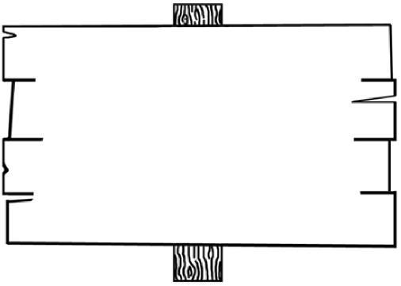
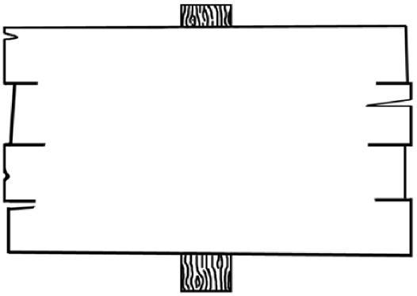
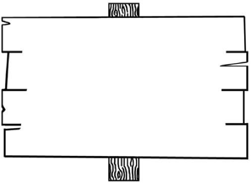
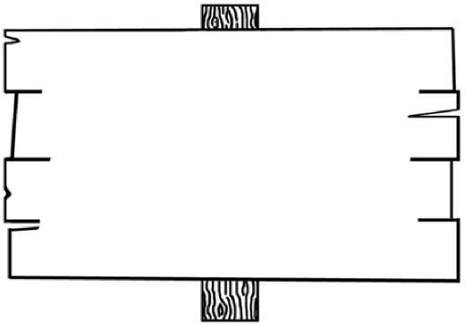
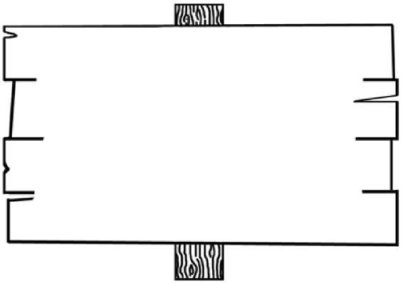
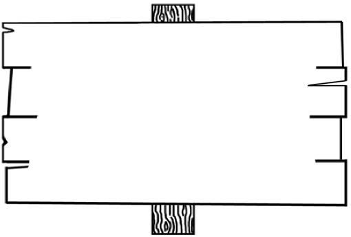

SECOND YEAR
TEXTBOOK
GOSPEL OF JOHN
Portland, Maine, USA
Deliverance Bible Institute
Gospel of John
Gospel of John
Introduction |
| 4 |
The Writer of the Gospel | 4 |
|
The Purpose of the Gospel | 4 |
|
The Style of the Gospel | 6 |
|
A Summary of the Gospel | 6 |
|
Chapter 1: He is the Son of God |
| 8 |
The Prologue 1:1-18 | 8 |
|
The Record of John 1:19-34 | 10 |
|
The Enlistment of Disciples 1:35-51 | 11 |
|
Chapter 2: He is the Son of Man |
| 13 |
The Wedding at Cana 2:1-11 | 13 |
|
The Cleansing of the Temple 2:12-17 | 15 |
|
The Sign of the Resurrection 2:18-25 | 16 |
|
Chapter 3: He is the Divine Teacher |
| 17 |
Interview with Nicodemus 3:1-21 | 17 |
|
Endorsement from John 3:22-36 | 19 |
|
Chapter 4: He is the Soul Winner |
| 20 |
Jesus Won the Soul of the Woman at the Well 4:1-30 | 20 |
|
Jesus Wanted the Disciples to Win Souls 4:31-38 | 21 |
|
Jesus Won the Souls of Sycar 4:39-42 | 22 |
|
Jesus Won the Soul of the Nobleman 4:43-54 | 22 |
|
Chapter 5: He is the Divine Healer |
| 23 |
An Example of Jesus’ Healing Power 5:1-18 | 23 |
|
The Explanation of Jesus’ Healing Power | 24 |
|
Chapter 6: He is the Bread of Life |
| 26 |
The Bread of Life Revealed 6:1-21 | 26 |
|
The Bread of Life Expressed 6:22-58 | 28 |
|
The Bread of Life Dismissed 6:59-71 | 29 |
|
Chapter 7: He is the Water of Life |
| 31 |
Jesus’ Person Questioned 7:1-13 | 31 |
|
Jesus’ Doctrine Questioned 7:14-24 | 32 |
|
Jesus’ Office Questioned 7:25-36 | 33 |
|
Jesus’ Circumstances Questioned 7:37-53 | 33 |
|
Chapter 8: He is the Defender of the Weak |
| 34 |
1
Deliverance Bible Institute
Gospel of John
Jesus Pardons the Adulterous Woman 8:1-11 Jesus Establishes His Testimony 8:12-30 Jesus Classifies His Disciples 8:31-51 Jesus Reaffirms His Authority 8:52-59 | 34 35 35 36 |
|
Chapter 9: He is the Light of the World |
| 37 |
The Blind Man Healed 9:1-7 | 37 |
|
The Blind Man Questioned 9:8-23 | 38 |
|
The Blind Man Accused 9:24-34 | 38 |
|
The Blind Man Enlightened 9:35-41 | 39 |
|
Chapter 10: He is the Good Shepherd |
| 40 |
The Illustration of the Doctrine of the Good Shepherd 10:1-6 | 40 |
|
The Explanation of the Doctrine of the Good Shepherd 10:7-21 | 40 |
|
The Application of the Doctrine of the Good Shepherd 10:22-42 | 41 |
|
Chapter 11: He is the Resurrection and the Life |
| 43 |
The Request for Jesus 11:1-16 | 43 |
|
The Reasoning of the Sisters 11:17-32 | 44 |
|
The Resurrection of Lazarus 11:33-44 | 45 |
|
The Retribution of the Jews 11:45-57 | 46 |
|
Chapter 12: He is the King |
| 47 |
The King Anointed 12:1-11 | 47 |
|
The King Exalted 12:12-36 | 48 |
|
The King Rejected 12:37-50 | 49 |
|
Chapter 13: He is the Lowly Servant |
| 50 |
Jesus Washes the Disciples’ Feet 13:1-17 | 50 |
|
Jesus Foretells Judas’ Betrayal 13:18-30 | 51 |
|
Jesus Foretells Peter’s Denial 13:31-38 | 52 |
|
Chapter 14: He is the Consoler |
| 53 |
Jesus Assured Them that There Would be a Place of Rest 14:1-4 | 53 |
|
Jesus Announced to Them the Way to this Rest 14:5-14 | 54 |
|
Jesus Affirmed to Them the Giver of this Rest 14:15-31 | 54 |
|
Chapter 15: He is the True Vine |
| 55 |
The Vine (Christ) 15:1-6 | 55 |
|
The Productive Branches (The Saints) 15:7-17 | 56 |
|
The Unproductive Branches (The Sinners) 15:18-27 | 57 |
|
Chapter 16: He is the Giver of the Spirit |
| 58 |
The Promise of the Spirit 16:1-16 | 58 |
|
The Prophecy of Sorrow and Joy 16:17-33 | 58 |
|
2
Deliverance Bible Institute
Gospel of John
Chapter 17: He is The Great Intercessor |
| 60 |
Jesus Prayed for Himself 17:1-5 | 60 |
|
Jesus Prayed for His Current Disciples 17:6-19 | 61 |
|
Jesus Prayed for His Future Disciples 17:20-26 | 61 |
|
Chapter 18: He is the Model Sufferer |
| 63 |
Betrayal by Judas 18:1-11 | 63 |
|
Trial by the Jews 18:12-14, 19-24 | 64 |
|
Denial by Peter 18:15-18, 25-27 | 64 |
|
Trial by Pilate 18:28-40 | 65 |
|
Chapter 19: He is the Uplifted Savior |
| 66 |
The Sentence 18:1-16 | 66 |
|
The Crucifixion 18:17-30 | 67 |
|
The Burial 18:31-42 | 67 |
|
Chapter 20: He is the Victory over Death |
| 69 |
Jesus’ Tomb Found Empty 20:1-10 | 69 |
|
Jesus’ Appearance to Mary Magdalene 20:11-18 | 69 |
|
Jesus’ Appearance to the Disciples 20:19-29 | 70 |
|
Purpose of John’s Gospel 20:30, 31 | 70 |
|
Chapter 21: He is the Restorer of the Penitent |
| 72 |
Jesus Appears a Third Time to the Disciples 21:1-14 | 72 |
|
Jesus Gives Some Instruction to Peter 21:15-24 | 72 |
|
Conclusion to Gospel of John 21:25 | 73 |
|
3
Deliverance Bible Institute
Gospel of John
Introduction
Though this book is often referred to as the Gospel of John, it should be understood that it is better referred to as the Gospel of Jesus Christ According to John since the book is about Jesus and not John. John’s book is not some new doctrine or idea, but it corresponds with the records of the other Gospel writers.
The Gospel of John was written between A.D. 85 and 90 by John the Beloved, the disciple of Jesus. He was born in Bethsaida of Galilee to Zebedee, a fisherman, and Salome, whom some believe to be the sister of Mary the mother of Jesus. He had at least one brother, James, and they both joined their father in his trade of fishing. It was while they were working with their father that they answered the call of Jesus to be fishers of men and be His disciples (Matthew 4:18-22). This John is not to be confused with John the Baptist. John does not use his own name when writing this gospel; instead he refers to himself as “the other disciple” or “the disciple whom Jesus loved.” There is internal evidence that shows that John was the author as we can see from John 21:24, 25.
According to Irenaeus, the pupil of Polycarp, who was a friend and pupil of John, John orally shared the Gospel for sixty years after the Acension. At some time, John was exiled by Domitian, the Roman emperor, to the Island of Patmos as an act of religious persecution. It was there that John received the visions included in the book of Revelation.
Irenaeus also said that after the death of Domitian in A.D. 96 that John returned from exile and settled in Ephesus. It is believed that it was there that the encouragement of friends and the direction of the Holy Spirit induced him to write this Gospel that he had so long been preaching. Nearly a generation after the other Gospels had been written, this Gospel was prepared, which shows that the life and labors of Christ were at this time well known to Christians. In the meantime, the apostles had preached the Gospel, Paul and Peter had suffered martyrdom, and all the apostles had passed to their reward, and Jerusalem was destroyed by the Romans. Clement of Alexandria (c.150 - c. 215) says, “Last of all, John, observing that in the other Gospels those things were related that concerned the body of Christ, and being persuaded by his friends, also moved by the Spirit of God, wrote a spiritual Gospel.”
Irenaeus accepted this Gospel and it is quite certain that Justin Martyr used it too. It was combined with the other books of the New Testament in the Diatessaron of Tatian about 170 A.D.
The purpose of John is stated internally in the Gospel; John 20:30,31 explains that the Gospel is an account of signs that proved that Jesus was the Messiah. The goal of John was that men might believe upon reading the accounts given within its pages.
Throughout the book we find the three key thoughts given here in John 20:30,31; those thoughts are signs, believing, and life. We see many signs in the book of John that
4
Deliverance Bible Institute
Gospel of John
prove that Jesus was the Son of God, these signs produced faith (believing) in Him and His work, and the result was that those that believed received eternal life.
A. The Gospel was written that men might see signs
Throughout the book of John we see many different supernatural occurrences that are given as evidence for men to believe in Jesus and His work. Jesus said in Mark 16:17, “Except ye see signs and wonders, ye will not believe” and so He gives many signs to encourage men to believe. While it is possible for men to believe without seeing (John 20:29), the fact remains true that most men will not believe without seeing first. When a man sees these signs a action is demanded--either he must accept it and believe or else he must reject it and doubt.
There are nine distinct signs in John that proved Jesus to be Master of things that we face every day. In these signs appear the revelation of God and they are clustered with teaching that interprets spiritual truth. These signs prove Him to be Master of:
Believing is to trust and a personally commit yourself to Christ; or relying on Christ with conviction. The words that involve believing (i.e. faith and believe) are used 98 times in John.
The outcome of destiny is determined by belief and unbelief. The scriptures never demand belief without providing adequate reason for commitment. John 11:40 says, “If thou wouldest believe thou wouldest see the glory of God.” Jesus gave Martha and all the disciples many reasons to believe, though demonstrating who He is by many signs. The Master of every situation demonstrated fully His adequacy for all human emergencies. The Resurrection was the crowning sign of all since it proved that Jesus not only had the power to raise other men from the dead, but He was also able to revive Himself.
When men see the signs and believe in them, then life is given. This life is more than natural life, but it is spiritual life--the life of Christ. This life is a restored fellowship between God and man (17:3), which was lost when Adam disobeyed God by eating the forbidden fruit. There are many references to this spiritual life in the Gospel of John, including 3:16; 3:36; 4:14; 5:24; 6:47; 8:12; 10:10; 11:25 and 12:25.
5
Deliverance Bible Institute
Gospel of John
III.The Style of the Gospel
The style of this Gospel is simple, but the thought is profound. Its great design is to set forth the divinity of our Lord as the basis of faith, and to meet the spiritual needs, not of a particular class (i.e. Jew, Roman, or Greek), but of all men and hence it is called “the spiritual Gospel,” and “the Gospel for the Church.” Gregory Nazianzen (c. 329 – c.390) says, “Matthew wrote the wonderful works of Christ for the Jew, Mark for the Roman, Luke for the Greeks, John, a herald, who reaches the very heavens for all.”
We have already noted the purpose (But these are written that ye might believe that Jesus is the Christ, the Son of God, and that believing ye might have life through His name) and this purpose shapes the style of the Gospel. It’s focus on producing faith in the heart of men is why John does not record many details of Christ’s life, but rather focuses on salvation. For example, he does not mention the facts concerning the birth and early life of Jesus or a genealogy of His family, but instead declares, “in the beginning was the Word.” This is also why instead of parabolic teaching, this Gospel contains the great spiritual discourses that do not appear in the Synoptic Gospels.
IV.A Summary of the Gospel
This Gospel presents a series of pictures, in each of which Christ is the Central Figure. Each of the 21 Chapters contains a striking portrayal of some aspect of the character or work of the Savior.
CHAPTER ONE: He is the Son of God. His deity is portrayed in verse one (in the beginning was the word, and the word was with God, and the word was God) and in verse fourteen (and we beheld His glory, the glory of the only begotten of the Father, full of grace and truth).
CHAPTER TWO: He is the Son of Man. Here we have a scene illustrating His perfect humanity. He appears as a guest at the marriage in Cana of Galilee where He mingles with men in their social activities.
CHAPTER THREE: He is the Divine Teacher. In this chapter we see Him instructing a master of Israel.
CHAPTER FOUR: He is the Soul Winner. Here we see the steps by which He led the darkened soul of the Samaritan woman out in to the light.
CHAPTER FIVE: He is the Great Physician. He is seen here bending in compassion over the sufferers at the pool. He shows His divine power by the instantaneous cure of a hopeless case.
CHAPTER SIX: He is the Bread of Life. As we read this chapter we realize that without Him the souls perish of hunger.
CHAPTER SEVEN: He is the Water of Life. From verse 37 we see that He is able to satisfy the thirsty heart.
CHAPTER EIGHT: He is the Defender of the Weak. Here we have a scene showing His gallant defense of a woman that have been found guilty of breaking the law.
CHAPTER NINE: He is the Light of the World. He demonstrates His right to this distinction by giving light to one who was born blind.
CHAPTER TEN: He is the Good Shepherd. He watches over “the flock” with
6
Deliverance Bible Institute
Gospel of John
infinite care and gives His life for His sheep.
CHAPTER ELEVEN: He is the Resurrection and the Life. He proves His right to this title by calling Lazarus from the tomb.
CHAPTER TWELVE: He is the King. He rides into Jerusalem on Palm Sunday and is acclaimed King of Israel by the multitudes.
CHAPTER THIRTEEN: He is the Lowly Servant. Here we have the marvelous scene of His condescension as He washes the disciples’ feet.
CHAPTER FOURTEEN: He is the Consoler. Although standing under the very shadow of His cross, in utter self-forgetfulness, He comforts the sorrowing disciples. CHAPTER FIFTEEN: He is the True Vine. We see Him as the source of all spiritual fruit.
CHAPTER SIXTEEN: He is the Giver of the Spirit. On His departure He promised to send the comforter into the world.
CHAPTER SEVENTEEN: He is the Great Intercessor. He offers up His wonderful intercessory prayers for the church.
CHAPTER EIGHTEEN: He is the Model Sufferer. He submissively drinks the cup of woe pressed to His lips by the Father’s hand.
CHAPTER NINETEEN: He is the Uplifted Savior. He becomes obedient unto death, even the death of the cross.
CHAPTER TWENTY: He is the Victory Over Death. As Christ arises from the grave we see that He has power over that final enemy/
CHAPTER TWENTY-ONE: He is the Restorer of the Penitent. He welcomes wandering Peter back to the fold and commissions him to feed the sheep and lambs.
7
Deliverance Bible Institute
Gospel of John
Chapter 1: He is the Son of God
I. The Prologue 1:1-18
The first eighteen verses constitute a division technically known as the prologue. The prologue is divided into two sections; the first deals with Christ revealed as the Word (vs. 1-14) and the second deals with Christ proclaimed by John the Baptist (vs. 15-18). These first 18 verses are mainly a presentation of the Person of Christ with the first fourteen verses on how He is seen through the eyes of the writer, John the beloved, and the last four verses on how He is seen through the eyes of John the Baptist.
A. Christ Reveled as the Word 1:1-14
This term, the Word, is mentioned four times in two verses—three times in verse one and once in verse 14. In the Greek it is the word Logos (Strong’s Number 3056), which means something said; speech; talk; tidings; treatise; utterance. Logos is not only used in contexts meaning natural speech, but in some situations (i.e. here in John 1:1-2) it means the Divine Expression or the uttered mind of God and is referring to Christ, who is the person of the godhead that communicates with man and reveals who God is (John 1:18; Luke 10:22). This reference of Christ as the Word is an idiom (an expression whose meaning is not predictable from the general grammatical rules of the language) and is peculiar to the writings of John (1 John 1:1, 5:7; Rev. 19:13).
“In the beginning was the Word” This is speaking of the Son of God or Christ, and not Jesus, which is the name given to the Son of God when he took on humanity. The Word (the divine Son of God) had existence in the fullness of His glory before the world was created. (Ps. 90:2; Dan. 7:9,13,22; John 6:62; 8:58; 16:28; 17:5; 17:24; I Pet. 1:20; Rev. 13:8)
In this verse we see a distinction made between the Father (God) and the Son (the Word) by the phrase “the Word was with God,” while at the same time it is not denying Christ’s divinity but rather affirms it in the next phrase “and the Word was God.” Christ is a part of the godhead, but He is not the entirety of the godhead and He is not an inferior being or creature but equal with the Father called by the same name, same attributes, performs same works, same honor, and they are the same in substance, which is their power and glory.
Christ was not only existent at the time of Creation, but He was also active in the works of creation (Eph. 3:9; Col. 1:16). Genesis 1:1 uses the plural noun Elohim (translated God) because it is referring to not only the Father, but also the Son and the Spirit, who both shared in the work of creation (notice the use of the pronouns us and our in Genesis 1:26). When it says, “all things were made by Him,” it does not refer only to every material object of the universe, but also the system of laws that govern those objects.
Christ (the Word) not only created all things, but He is the one that gives a living soul
to mankind. Adam’s physical body was first created, but it was not until God breathed into
8
Deliverance Bible Institute
Gospel of John
him that he became a living soul that could have fellowship with God (Gen. 2:7; Job 33:4). When Adam sinned, his physical body did not instantly die, but his spiritual soul did. It is Christ that restores this spiritual life to mankind and “enlightens” his soul.
“The life is the light of men.” Light is used as a symbol for life throughout scripture (Ps. 18:28; Prov. 24:20; John 8:12) and it also refers to righteousness (John 3:19-20; 12:25) and a revelation of knowledge (II Cor. 4:6). When Christ comes into a man’s life He transforms a soul that is dark with sin into a new, living creature that is full of righteousness and knowledge of God.
“And the light shineth in darkness; and the darkness comprehended it not.” Christ’s appearance into the world brought the opportunity for light to shine in the souls of every man, but not every man would receive it “because their deeds were evil” (John 3:19). They were not able to extinguish the light or even make it go dim, but they could refuse it, and they did.
4. The Word and the World 1:10
The English word “world” is used 70 times in the Gospel of John in the KJV and it is
used to describe both the physical and spiritual environments that man inhabits.
When Christ came into the world as the long-awaited Messiah he did not receive the warm welcome from the Jewish people as we might have expected, but rather “His own received Him not” (i.e. Matt. 21:33-46; 26:3-4; Luke 4:28-29). While His own people as a whole did not receive Him, there were some Jews that did accept Him as well as some people from other nationalities such as Samaritans (John 4) and Greeks (John 12:20-21) that did believe on Him.
Incarnation is the act of a living being embodying a deity or spirit, and it is thus Christ taking on the form of a man and being born in that lowly stable in Bethlehem. While the Nativity accounts in Matthew and Luke deal with it from earth looking up to Heaven, the account here in John deals with it from Heaven looking down to earth; Matthew and Luke look at it more from a natural perspective while John looks at it entirely spiritual and does not mention His mother, the journey to Bethlehem, or the swaddling clothes. John does not focus on how He became incarnate, but rather on why He became incarnate—to dwell among men and reveal to them the glory and power of God.
B. Christ Proclaimed by John 1:15-18
In those days just before the coming of the Lord, there was a thundering voice of a prophet heard in the land crying out against religious pretense, against the traditions of men, and against the religion of form that had substituted the true worship of God. This voice was none other than that of John the Baptist, who was sent by God (1:6) to be a forerunner of
9
Deliverance Bible Institute
Gospel of John
Christ. John did not proclaim himself or his ideas or religion, but he spoke that which God spoke to Him (Luke 3:2), which was a message of repentance to prepare for the appearance of the Messiah (Matthew 3:1-3). The Baptist’s message of uplifting Christ fits well with the account given here in John even more so than the accounts in either Matthew, Mark, or Luke, for here we do not find any record of John’s baptism ministry or of his message of repentance, but we only see a heralding of the Messiah—all his speech revolves around Him.
Though much condensed, the witness that the Baptist gives here in John 1:15-18 is very similar to that already given in verses 1-14.
The Idea | The Beloved’s Testimony | The Baptist’s Testimony |
Christ is preeminent | The Word was God 1:1 | He is preferred before me 1:15 |
Christ is eternal | In the beginning 1:1 | He was before me 1:15 |
Christ gives salvation | To them gave he power to become the sons of God 1:12 | Of his fullness have all we received 1:16 |
Christ gives life | In him was life 1:4 | Grace and truth came by Jesus 1:17 |
Christ is the divine image | The Word 1:1 | The son...hath declared him 1:18 |
II. The Record of John 1:19-34
After brief but powerful statements about the deity of Jesus, His pre-existence, and incarnation, John’s Gospel now introduces Jesus in person by His introduction and baptism by John the Baptist.
The ministry of John the Baptist was not a quiet, uncontroversial one and so it attracted the attention of the Jews when he rebuked the Pharisees and Sadducees (Matt. 3:7), publicans (Luke 3:12), and even Roman soldiers (Luke 3:14). The religious leaders were amazed at his boldness and sent messengers to find out who in the world he was and why he felt he had the authority to say such things.
“Who art thou?” they asked John, but he would not directly answer their question, but rather told them who he was not. He was not concerned what they thought about him, but all his answers pointed to Christ. When he finally did tell them who he was, it was still in relation to Christ—he was a voice sent to prepare the way of the Lord. It can be said this way, John had this testimony that not even the Priests and Levites knew who John was, but God did – a man sent from God to bear witness.
When they realized who he was (or more, who he wasn’t) they asked him why he then felt he had the right to baptize people (the Jews asked the question concerning baptism, because Jewish people often often emphasized ceremonial methods). John once again bypassed their real question and gave them an answer that related to Christ—he was doing a small thing (baptizing with water) compared to what Jesus would do (baptize with fire—see Matt. 3:11).
10
Deliverance Bible Institute
Gospel of John
The day after this interrogation we see Jesus come to John, at which John made his famous proclamation, “Behold the Lamb of God!” This title reveals that John had prophetic insight from God concerning Christ for he knew that He would be the antitype of the Passover Lamb. He knew that He would not be the political leader for whom the Jews were searching, but rather He would be as a lamb slain for the sins of all humanity, and thus take “away the sins of the world.”
By revelation from God, John knew that Jesus was more than a mere mortal, but he knew that He was preeminent (He that cometh after me is preferred before me) and that He was eternal (for he was before me)—He was the Son of God robed in human flesh.
John did not know that it was to be his cousin that he was announcing when he started preaching, but he did know that someone would come soon and reveal himself to Israel as the Messiah. John realized and proclaimed that Jesus was indeed the One for whom he had been waiting.
Remember, the key thoughts of the Gospel of John are signs, believing, and life, and here we see those ideas working in the life of John the Baptist. He was not told by God who the Messiah would be by name, but he was told a sign that would reveal who the Messiah would be. This sign was that John would see the Spirit of God descend from Heaven and abide on an individual and that man was to be the One who would baptize with the Holy Ghost.
While we do not see here an account of the actual occurrences of Jesus’ baptism, we do see detailed accounts in the other Gospels (i.e. Matt. 4:13-17), which agree with what is said here in the Gospel of John. When John saw the Spirit descending on Jesus “like a dove” he believed that Jesus was the Son of God, who was the source of life for whom John had been seeking.
III.The Enlistment of Disciples 1:35-51
John the Baptist now knew that Jesus was the Messiah and he also knew that his own ministry was soon coming to a close. The day after Jesus’ baptism John was standing with two of his disciples (one we know is Andrew and the other’s identity is uncertain), Jesus passed by, and John proclaimed once again, “Behold the Lamb of God!” This was John’s message to his disciples that this was the man that he had been talking about and that they should start following Him. The disciples were quick to respond and immediately started following Jesus without any other prodding.
11
Deliverance Bible Institute
Gospel of John
We see Andrew coming out of his encounter with Jesus and hurrying away to find his brother Simon Peter and gave him the message, “We have found the Messiah (the anointed One)-- the Christ!” and then brought him to Jesus. This is what we need to do as Christians— we have found the Messiah and we need go out with excitement and tell others about Him and compel them to come unto Him.
Jesus travelled to Galilee where He found Philip and compelled him to follow Him. Philip is known in Acts 21:8 as an evangelist, and he held true to that title from the beginning of his discipleship, for soon after encountering Jesus he ran to find Nathanael and tell him about “Him, of whom Moses in the law, and the prophets, did write, Jesus of Nazareth.”
Nathanael was not as quick as the other disciples to believe that Jesus was the Messiah. His initial response to Philip’s proclamation of the Messiah was one of doubt, “Can there any good thing come out of Nazareth?” Matthew Henry says of Nathanael’s response that, “His objection arose from ignorance.... If he meant that the Messiah, that great good thing, could not come out of Nazareth, so far he was right (Moses, in the law, said that he should come out of Judah, and the prophets had assigned Bethlehem for the place of his nativity); but then he was ignorant of the matter of fact, that this Jesus was born at Bethlehem.”
Philip needed to see a sign before he could believe. Jesus gave him such a sign of His omniscience by revealing that He knew about his character and also about his physical location at the time when Philip came to him. These signs led Nathanael to believe and Jesus told him that if he continued to believe that he would “see heaven open and the angels of God ascending and descending upon the Son of man.” This speaks to us of the fullness of God’s power—the fullness of life.
12
Deliverance Bible Institute
Gospel of John
Chapter 2: He is the Son of Man
In chapter one we see the divinity of Jesus exemplified through the eyes of both Johns, but at the same time we must realize that while He was very much God that He was also very much man—we must realize that He is not only the Son of God, but He is also the Son of Man. The second chapter of John magnifies this fact as we see Jesus mingle at a wedding, interact with His mother, participate in the Passover, and show the human emotion of anger.
I. The Wedding at Cana 2:1-11
Either three days after Jesus talked to Nathanael or three days after Jesus had entered Galilee He and His disciples were invited to a wedding feast in Cana. Cana (modern Kefr Kenna) was a small town about six miles northeast of Nazareth in the tribe of Asher (Josh. 19:28). The description “of Galilee” was used to distinguish it from another Cana, which was in the tribe of Ephraim, in the Samaritan country (Josh. 16:8; 17:9).
Along with Jesus and His disciples, there was present Mary, the mother of Jesus. It is quite probable that one of the married couple was closely related to Jesus and His mother and that is why they were both present at the feast.
A problem arose at this feast—they ran out of wine, either because of a lack of planning or because more guests had arrived than had been expected. Now the bridegroom was in danger of displeasing his newly acquired father-in-law (the ruler of the feast) by this lack of planning on his part and the mother of Jesus sought to help the situation.
“They have no wine,” she said to her Son. Before this time she had never seen Him perform a miracle and so it was evident that she firmly believed that He was not a normal man and that He had supernatural power even though He had not revealed it yet.
“Woman, what have I to do with thee? mine hour is not yet come.” Jesus was not being impudent or disrespectful; He was simply showing her and those around Him that although He was the Son of God, it was not His time to be glorified. He did not come to earth for this purpose of meeting man’s physical need, but His “hour” would come when He would meet man’s spiritual need on the cross (John 17:1). Even though it was not His purpose to physically help man and neither did He owe it to the bridegroom or any of the others present to assist in the situation, we see His humanity as He shows compassion for this bridegroom and respect to the request of His mother and He proceeds to perform a miracle.
Mary shows confidence in her Son by encouraging the servants to do whatsoever He may command. That day they did not have wine, but they did have good attitudes, obedience, and willing hearts and when those ingredients are mixed with the power of God great things will happen. Obedience to Christ is always the believer’s duty, even though he does not totally comprehend the reasons for Christ’s commands (Gen. 41:55).
13
Deliverance Bible Institute
Gospel of John

Sign #1
MASTER of QUALITY
At the wedding of Cana Jesus turned water into wine proving that He had the ability to take that which was unwanted (water) and make it something that was wanted (wine). At seeing the sign the disciples believed that He could make something good out of anything that was destroyed by sin.
C. The Results 2:9-11
After the pots were filled, Jesus then told the servants to “Draw out now, and bare unto the governor of the feast.” There is no indication in the Scripture that anything special had happened to the water as of yet, so as these servants moved in obedience to take the water to the new father-in-law they were also taking a big step of faith. Telling men to act before results are seen is not a strange thing for God, for we see Him tell Joshua to have the priests step into the Jordan River before it dried up (Josh. 3:8, 13) and Jesus told the ten lepers to go tell the priest that they had been cleansed while they still possessed the plague (Luke 17:14). In both situations it was not until the action of obedience had take place that the miracles occurred; the same is true here in John two, for it is not certain exactly when the miracle took place, but it is certain that when the ruler drank what the servants brought him that he tasted fresh grapes and not plain water. There has been added to the water that which was not there before; the same power that said, “Let there be light” called these elements and additional compounds together in a twinkling of an eye and performed the miracle of once water, but now is good wine.
The governor of the feast knew all the resources of the feast, but this puzzled him. He knew that he had never tasted wine of this quality before.
“But thou has kept the good wine until now.” There was no reply from the
bridegroom recorded after this statement was made. The silence was a good indication of his agreeing to the fact that it was good wine.
This miraculous event of turning water into wine was the “beginning of miracles” for
14
Deliverance Bible Institute
Gospel of John
Jesus. Jesus did not come to the wedding to be romantic, put on a show, do magic, deceive, entertain, or excite the people present, but the object of Jesus being there was to convey to His disciples a little something of His vast power which He has for meeting any emergency that arises in their experiences ahead. They were admitted to great superhuman power. Because of the miracle His disciples believed on Him; they had already believed He was the One that they should follow, but now they believed that He had unlimited resources at His disposal—they realized a little more that He was the Son of God.
There is no record that anyone else besides the disciples believed on Jesus because of the miracle. We know for certain that the ruler of the feast didn’t know where the wine had come from and it is very possible that the bridegroom didn’t know either, so neither one of them would have believed on Jesus because of the miracle. That is the problem with the world, so few recognize that it is God that has worked in their lives for the good.
II. The Cleansing of the Temple 2:12-17
Moving on from Cana of Galilee we see Jesus make His first recorded appearance in Jerusalem since He confounded the doctors as a boy (Luke 2:41-51). The occasion for His presence was the Passover, which was celebrated for seven days once every year from the 15th to the 21st of the month Abib (which corresponds to our April) and represents the first Exodus of the Israelites as they were delivered from Egypt. As the Son of Man, Jesus’ participation in this event was not a strange thing for according to the Law every male among the Jews was required to appear at this feast (Deut. 16:6).
Upon entering the temple, Jesus sees men trying to make money by exploiting people’s halfhearted desire for religion. Some men were selling sheep and cattle that were required by every man to offer as a sacrifice, while other men were taking foreign money from pilgrims that had traveled from all over the world and exchanged it for a half-shekel of silver (the shekel of the sanctuary) that was offered to the priest (Ex. 30:13); no doubt these merchants charged a fee for the exchange. Josephus recorded that 256,500 animals were offered yearly and there was probably close to the same amount of shekels given—that would have been a large profit for these men.

Sign #2
MASTER of SOULS
Jesus showed authority when He commanded the merchants to leave the temple. It shows that He had the power to make judgment on men’s souls and command what they should do. As the disciples remembered the words of Psalm 69:9, they realized that this power came from Heaven and not any earthly throne.
accommodating travelers from afar off were not altogether wrong, but what was wrong was that they were using God’s Holy House as a common marketplace. At the same time, the people’s lack of coming prepared to the celebration shows how that the religious scene at this time was only one of formality where no real thought of sacrifice or dedication was involved.
When Jesus saw these men He did not hesitate to execute the judgment they deserved. He made a scourge of small cords and quickly disrupted their wares and expelled them from
15
Deliverance Bible Institute
Gospel of John
the temple as He declared, “Take these things hence! Make not my Father’s house a house of merchandise!” There is little doubt that Jesus here expressed the human emotion of anger, which is not a sin in itself as long as it is not coupled with other sins (Eph. 4:26). Jesus did not sin in what He did, but rather He was in essence refuting sin as He moved to cleanse the temple that day.
God had always judged sin, but until this point we had seen it executed from the realms of heaven as in such circumstances as the fire on Sodom and Gomorrah and the plagues on Egypt. Now we see judgment executed differently only as the Son of Man could do it—God was directly punishing man through the hands of flesh.
III.The Sign of the Resurrection 2:18-25
At the sight of Jesus dispelling these merchants from the temple the Jews were amazed at the authority that Jesus displayed and they wanted to know why He had the right to do such a thing—they wanted Him to give them a sign to prove that He was from God. Jesus gave them a sign, but He gave it in a parable, “Destroy this temple, and in three days I will raise it up.” Jesus was referring to His body as the temple and was referring to the crucifixion and resurrection. The Jews did not understand this and thought he was speaking of the physical temple, which they denied could be rebuilt in three days since it had taken forty-six years to erect originally. Their unbelief in His sign did not make it any less real, for after He had arose the disciples remembered it and realized what He had been talking about.
This sign was different then the divine signs that the Hebrews had received in the past for it was not given by a prophet, angel, or other oracle of God, but now that the Son of Man had come, God spoke in the first person and He Himself gave the sign. There was no middle man needed, but God spoke with man face to face.
16
Deliverance Bible Institute
Gospel of John
Chapter 3: He is the Divine Teacher
Throughout the stages of time the Jewish people had been accustomed to the scholastic way as a part of life. According to Baker’s Evangelical Dictionary, in Jewish culture around the time of Christ “male children between the ages of five and twenty usually attended synagogue schools and were trained in the Torah, the Mishnah, and the Talmud.” In this atmosphere of strong emphasis on education, it is only natural that there should also be strong emphasis on educators--as can be seen because the Talmud (Avot) repeatedly reinstates the importance of the teacher in this learning process. We see from Luke 20:46 that these religious teachers were quite respected by the average person (Scribes are specifically mentioned in the passage, but without doubt the Rabbis shared in at least some of this respect). Though man had been accustomed to the natural teachers, they had not yet encountered the divine teacher--Jesus Christ. His knowledge was not acquired by lectures and book learning, but it was ingrained in Him for He was the omniscient Son of God. It was this supreme knowledge that made Him the greatest teacher ever.
I. Interview with Nicodemus 3:1-21
A. Jesus & Nicodemus—Face to Face 3:1-3
There is no record of Jesus publicly teaching before John chapter three, but it can be assumed that He did for He had gained a reputation of being “a teacher sent from God” and it was this reputation that one night drew a man named Nicodemus to ask Him questions. Nicodemus was a man of position in his community—he was referred to as a man of the Pharisees, a ruler of the Jews (John 3:1) and a master (or teacher; instructor) of Israel (John 3:10). We see him fulfill the role as a religious leader in John chapter seven where he participates in a council meeting of the Pharisees (John 7:45-52).
Most believe that Nicodemus came to Jesus by night because he was afraid of persecution from his fellow religious leaders (this coincides with the fact that in both John 7:50-51 and 19:39 that while it is clear that he believed in Jesus, he still did not make a clear public confession), though others argue that it was full moon at the time that he came to Jesus and thus he was not really hidden by the dark and was not concerned with whether people saw him with Jesus or not but that he only came at that time because he had opportunity while the crowds were away sleeping. All three times when Nicodemus is mentioned in Scripture this fact that he came by night to Jesus is mentioned; this added emphasis to this fact gives support to the theory that he did it out of fear of being seen rather than convenience, though the other theory is still possible.
Nicodemus may have come in fear, but however he came this fact is true--he did come; this reveals his desire to know Jesus. He addressed Him with respect by calling Him Rabbi, which means my master and is used as title of honor. He continued on and said, “We know that thou art a teacher come from God: for no man can do these miracles that thou doest, except God be with him” (John 3:2). The fact that he said “we” instead of “I” indicates that at least one other person had confided with Nicodemus that they also believed that Jesus was a teacher from God (John Wesley believed that it might have even been other leaders and
17
Deliverance Bible Institute
Gospel of John
Pharisees). Although it is not explained in the Scripture, it is possible that these other people may have even elected Nicodemus to be the spokes person to find out if Jesus was real.
Nicodemus knew that Jesus had performed miracles—this is interesting because until this time there is only record of one miracle that Jesus performed. It is possible that Nicodemus had heard exaggerated rumors of what Jesus had done or else he attributed Jesus’ glorious baptism and triumphant cleansing of the temple as miracles performed by Him. These miracles were enough proof for him to acknowledge that Jesus was sent by God. The fact that Nicodemus believed that Jesus was a teacher sent by God does not mean that he realized that Jesus was actually the Son of God; he was more or less only comparing Jesus to a prophet or other oracle of God. His mind had not yet been opened up to the spiritual realm and was thus trying to figure out who Jesus was according to what he understood in the natural realm. Jesus’ response to Nicodemus’ statement was, “Verily, verily, I say unto thee, Except a man be born again, he cannot see the kingdom of God.” Jesus knew of Nicodemus’ blindness to the spiritual world and told him of the one and only remedy—spiritual birth.
Nicodemus was puzzled by this response; he thought that Jesus wanted him to crawl inside of his mother’s womb and be born again naturally. He was right that the physical man could not be born again, but what he did not realize was that the spiritual man can be born again—he can be completely regenerated. This regeneration only takes place by the water (the Word of God—Psalm 119:9; Eph. 5:26) and the Spirit. You must understand “that which is born of the flesh is flesh; and that which is born of the Spirit is spirit;” That is, there is a significant difference between what we see in the physical world and that that is in the spiritual world.
Now we see Jesus give Nicodemus a beautiful illustration in verse eight—You cannot understand the blowing of the wind, but you obey the law and gain its force; so it is with the Spirit. Do not postpone the new birth experience because of intellectual struggle. Obey the law of the wind, and the wind obeys you. Obey the law of the Spirit, and you will know the new birth. To this illustration Nicodemus again displayed unbelief as he said, “How can these things be?” He was a man that had been taught all the ways of religion, knew of all the commandments of the law and prophets, heard all the promises of God, and was well versed in all of these things enough to be a teacher of them and yet he still did not know the true meaning of it all. As Jesus said, he “receive[d] not our witness” (3:11). This is pure evidence that religion alone is not enough to save a man. Jesus used the natural illustration of wind to explain the life in the Spirit and Nicodemus did not understand; Jesus knew that if He outright told Him of heavenly things then he definitely would not understand.
A good teacher will try to help His pupil to understand what he is saying even though it may take some extra effort. Jesus knew that Nicodemus could not fully understand the secrets of heaven, and yet out of love He continued to explain to him the plan of salvation hoping that Nicodemus would realize that the One that could open up his understanding was the same One to whom he was speaking.
18
Deliverance Bible Institute
Gospel of John
Jesus explains how salvation comes to a man--it is not by works or religion, but it came down from heaven.
From this passage we do not see what Nicodemus’ final response was to Jesus’ exhortation on salvation, but from the afore mentioned passages of John 7:50-51 and 19:39 that it is quite obvious that Nicodemus at least partially grasped that Jesus was the Son of God—the Divine Teacher who alone knows the Words of eternal life.
II. Endorsement from John 3:22-36
After Jesus’ conversation with Nicodemus He left the city of Jerusalem in Judea and went with His disciples into wilderness outside of the city where He baptized people (though it was actually His disciples that did the baptizing upon His command and authority and not He Himself—John 4:2); at this same time, John the Baptist was baptizing in Aenon. John’s disciples (men that knew John, believed in his ministry, and had been influenced by his ministry) came to John and asked him about Jesus. They knew that John bare witness of Christ and proclaimed Him to be the Lamb of God, and yet they were bothered that Jesus was moving into John’s ministry of baptism.
John reassured them that if Jesus had not received the power and authority to baptize from heaven, then He would not have it at all. He them reminded them that he had already told them (probably on numerous occasions and not just in John 1:20) that he was not the Christ but was only a forerunner of Him. John was not upset because Christ had come and was replacing John’s ministry with His own, but he was rather glad for it. He expressed it with an illustration of how the best man in a wedding is glad when the bridegroom comes for the bride—he is not upset that the focus and attention is not on him, but is rejoicing for the great blessing that has befallen the couple. John’s joy was fulfilled now that Christ had come; He was the One for whom John had spent his whole life looking and proclaiming and now he had come.
John realized that he himself was a teacher who spoke about God, and that Christ was a teacher who was God. John knew his ministry of teaching had to decrease as the ministry of Christ came to fullness. Jesus deserved this place of epitome in ministry for He was the highest One—the One that came down from heaven. Jesus was the greatest teacher for He spoke the Words of God in first person. He was not teaching history of what had happened nor did He pronounce philosophy of what might happen, but He proclaimed the pure unadulterated Word of God—that which was at that very moment happening. He had “all things” given into His hands to give unto men, and if any man would hear and believe His teaching, they would receive eternal life.
19
Deliverance Bible Institute
Gospel of John
Chapter 4: He is the Soul Winner
I. Jesus Won the Soul of the Woman at the Well 4:1-30
Jesus and His disciples left Judea and made a journey to Galilee. The only practical path to take on this journey northward was to go through the country of Samaria. The Samaritans were decedents of people that were placed in this land by Esarhaddon, the king of Assyria during the Assyrian captivity of the Jews. These people intermarried with the Jews that had been left behind to care for the land. This union created the Samaritan people—a people that were half-Jew and half-Gentile. Matthew Henry refers to them as “mongrel Jews...both in blood and religion” because while they abandoned their old idolatry after they entered the land, they only partly adopted the Jewish religion. It was no doubt a hard thing for the Jews to have to make the journey through this country of their enemies and it is possible that some made the option instead to go the long way around the country rather than go through it. Jesus did not only go through this country because it was the most convenient path, but He knew that there were souls that He could help in this foreign country.
When they came to the city of Sycar, the disciples left Jesus to go into the city and buy some food. While they were gone, Jesus, who was very much man, sat down on the well to get some rest from physical exhaustion. Though He may have been physically tired He was still spiritually strong and was more than eager to reach out to the lost and win a soul.
A woman of the city came to the well to draw water and Jesus asked her to give Him a drink. This request surprised the woman, because the Jews were so against the Samaritans that they did not ask them for favors. Jesus told the woman that if she only knew the gift of God and to whom she was talking to then she would ask Him for living water. The woman thought He was talking about natural water, but she did not know that Jesus was speaking about spiritual water (7:37-39). She wanted to know how He would be able to get the water out of the well without any kind of vessel.
Jesus wanted the woman to know that the spiritual water that He had to offer was much better than the physical water that she could get from the well. If we only seek after the natural things of this world than we will never be satisfied even though we may have great possessions, but if we receive of the things of the Spirit, then they will satisfy our soul and teach us to be content with the things that we have in the natural (Phil. 4:11; Heb. 13:5). When God fills us, He does not just give us just a few drops, but He gives us rivers of living waters flowing from our soul (7:37; Is. 58:11).
The woman was still thinking in the natural and she thought that Jesus hag some kind
of magical water that would make her so she never got thirsty again. She asked Jesus for this
20
Deliverance Bible Institute
Gospel of John
water and He told her to go and get her husband. The woman told Jesus that she had no husband. Jesus told the woman that she was correct in saying that she had no husband at that time, but in the past she had fives husbands and now she was living with a man to whom she was not married.
When Jesus asked the woman to bring her husband He knew all these things about her. He was not trying to find out information about her life, but He was looking for a confession of her sin--she had to admit that she was living in adultery. Before God can help us with our sin we must first confess it (Pro. 28:13; I John 1:9).
When the woman heard Jesus tell her all about her life, then she proclaimed that He was a prophet. Revelation is sometimes a progressive work. God may show you part of a thing at one time and then later He will reveal to you the other pieces. This woman understood that Jesus was a prophet, which is true, for Jesus was the Prophet (Acts 3:19-24), but she did not yet realize that He was the Messiah.
Though the woman realized that Jesus was the Prophet, she was trying in her mind to figure out how this Jew could be a messenger of God. The Samaritans used Mt. Gerizim as a place of worship, while the Jews worshipped at Jerusalem. There were certainly other religious differences between the Jews and the Samaritans, and this woman was wondering how God could use a person that believed so differently from what she thought was right.
Jesus helped the woman to understand that it did not matter where a person worshipped, but how a person worshipped--a person must worship God in spirit and in truth. A person must worship God from his heart and not only from his head and they must worship God according to the truth found in the Word of God.
The woman did not really know what to believe about the things that Jesus said those things to her, and she tried to put off dealing with those ideas until a later date. She thought that someday in the far off future that the Messiah would come and He would make known the truth about all things, including the right way to worship. Many people do not want to search out the Scriptures and pray for revelation so that they can understand the truth about certain doctrines of the Bible. They feel that some things are too complicated for us to understand and that we will only know the truth when we get to heaven and speak to God face to face, but we do not have to wait to learn truth for the Divine Teacher can reveal to us all truths is we would only be diligent to listen to His voice.
Jesus proclaimed to the woman that He was this Messiah of whom she spoke. This woman did not only hear the vibrations in her ears when Jesus spoke, but something resonated in her heart that told her that this proclamation was true. Just like when Andrew and Phillip were saved, when this woman encountered Christ, the first thing that she did was run out and tell others about it.
II. Jesus Wanted the Disciples to Win Souls 4:31-38
The disciples returned from the village as Jesus made this proclamation to the
woman. They were probably thinking negative things in their minds because of the
21
Deliverance Bible Institute
Gospel of John
nationality of the woman, but none of then dared to speak them. When the woman left, the disciples encouraged Jesus to eat the food that they brought. Jesus told them that He had meat to eat that they knew not of. He was not speaking about physical food, but He was saying that His satisfaction was doing the will of the Father.
It was possibly when Jesus looked up and saw the many Samaritans coming to meet Him that He told the disciples, “Lift up your eyes, and look on the fields; for they are white already unto harvest.” Jesus did not want His disciples to wait until some far off date before they reached out to the lost, but there were many souls ready to receive the Gospel right then. Jesus knew that there were more souls than could be reached by these twelve men and He told them in Matthew 9:38 to pray that God would send more laborers into the harvest field. Jesus did not tell then to complain because others were not helping, but rather to pray that God would work in their hearts and give them the desire to go out and help work in the fields.
III.Jesus Won the Souls of Sycar 4:39-42
There were many people that came to Jesus from the city when they heard the testimony of the woman. When they herd Jesus Himself speak they too believed His words. The testimony of the women led many people to Christ, but it was not her words that changed their lives. Her words only led them to Christ, and He is the only One who can transform a man (4:42).
IV.Jesus Won the Soul of the Nobleman 4:43-54
After His two day detour in Samaria, Jesus finally reached His destination of Cana of Galilee. When He arrived there were already people that believed in Him for these people where at Jerusalem when He overthrew the tables of the money changers. There were other men that probably heard the testimony that these men brought back.

Sign #3
MASTER over DISTANCE
When we need to deal with a situation, it is most beneficial for us to be where the problem is. A doctor cannot help a patient unless he is at his bedside. Jesus proved that He is not limited to the boundaries created by distance and healed the boy without ever even stepping in the house where he lay.
Vs. 48—The only reason that Jesus performed miracles was so that people would believe. There were many people that were healed during Jesus’ ministry, but not all of them believed. When this son was healed, not only the father believed but the whole house did.
22
Deliverance Bible Institute
Gospel of John
Chapter 5: He is the Divine Healer
I. An Example of Jesus’ Healing Power 5:1-18
John chapter five opens up with Jesus returning to Jerusalem to attend “a feast of the Jews.” It is thought by many that this “feast” was the Passover, but there is no evidence to either concretely prove or disprove that theory. It was during this trip to the Holy City that Jesus visited the pool named Bethesda, which is by the sheep gate (it is translated sheep market in the KJV, but it almost certainly referring to the gate built by Eliashib and his family when Jerusalem was rebuilt as told in Nehemiah 3:1). This pool had a legend behind it that at a certain time in the year an angel would come down from heaven and stir the water; once the water was troubled the first person that got into the water was healed of any diseases they possessed. This occurrence was not simply a fairy tale or hoax, but the divinely inspired writer of the Scripture wrote it as a fact, and it is possible that he had known someone personally that had been healed in years past by making it first into the pool. The name Bethesda means “house [or place] of mercy” and is likely named so because of all the miraculous cures wrought there by the mercy of God.
Underneath the five porches that surrounded this pool there gathered a multitude of people vexed with every disease imaginable. These people all wanted to be healed and at the time of troubling of the water they certainly all selfishly pushed and fought to try to capture the coveted prize of rejuvenation. It was in the midst of this crowd of impotent folk that there lay a certain man that had been sick for thirty-eight years. We do not know what disease he had or for how long the disease had rendered him bedridden, but we do know that when Jesus came to the pool that he was unable to move about without the help of another man.
With the vast amount of people waiting to be healed, it is hard with the natural mind to figure out why Jesus singled out this man instead of healing the whole crowd. It is quite possible that Jesus knew that the others would not respond to a simple command of faith and that they were too wrapped up in the wonder of this sensational yearly miracle to be bothered with anything else. Many people are still this way; they look forward to special meetings and conventions when there is great moving of the spirit and yet they do not realize that they can receive help at any time if they would only respond to the Word of God.
Because He is the omniscient Son of God, Jesus did not have to interrogate the man to find out his history, but He already knew all about him and the fact of how that he had been sick for thirty-eight years. Upon seeing the man, Jesus asked him, “Wilt thou be made whole?” This might have seemed like a strange question, for why else would the man lie there year after year if he did not desire to be healed? The man responded with the best answer he could give from his carnal mind, “Sir, I have no man, when the water is troubled, to put me into the pool: but while I am coming, another steppeth down before me.”
23
Deliverance Bible Institute
Gospel of John

Sign #4
MASTER of TIME
Often we put time frames on things and say that God HAS to work in them or else things will not work out right (such as Martha in John 11:21), but Jesus proved that though this man had been sick for nearly four decades, there was still time for him to be healed.
Jesus proceeded, “Take up thy bed and walk.” This was a challenge to the man’s will to arise to action. He had to personally respond to what Jesus said. He had to walk for himself; he was to no longer expect another man to carry him around. The basis of a miracle is the exercising of the will.
The Jews were very upset because Jesus healed this man on the Sabbath day, because according to the Law, no work at all was to be done on the Sabbath (Ex. 20:8-11). The punishment for breaking this law was death (Ex. 31:14-17) and the Jews wanted to execute this judgment (4:16).
What the Jews did not understand was that the Sabbath was given as a part of the ceremonial law, which was fulfilled in Christ (Col. 2:16, 17). Jesus is the Sabbath for our souls (Heb. 4:9-11) and the principle behind the Sabbath was for men to cease from their own labor and rest in the provision of God.
One of the first things the man did after he was healed was to go to the temple to worship God. When God helps us and works on our behalf, we need to give Him thanks.
Jesus found the man in the temple and said to Him, “Behold, thou art made whole: Sin no more Lest a worse thing come unto thee.” God can help us and drive back the power of the devil from our life, but if we sin, there is no guarantee that that power of darkness will not return to our lives if we go back and sin. When God saves us, He frees us from the power of sin, but we still retain our free will and if we desire to go back to the bondage of sin God will not stop us.
II. The Explanation of Jesus’ Healing Power
A. The authority behind Jesus’ power 5:19-30
1. Authority given by God 5:19-23
Jesus knew that unless He had power granted to Him from God, then He could not perform such miracles. He did not do His own thing, but He as united in mind and spirit with the Father and He only did the things that the Father would do.
24
Deliverance Bible Institute
Gospel of John
B. The witnesses of Jesus’ power 5:31-47
Jesus knew that His words alone were not enough grounds for someone to believe in His power and authority, so He said, “If I bear witness of myself, my witness is not true.” Hebrew Law required at least two witnesses for any matter to be established (Deut. 19:15); Jesus continued to give them a list of four witnesses that established His power and authority that gave Him the divine right to heal the man even on the Sabbath.
Repeatedly John the Baptist had told the Jews that Jesus was “the Lamb of God.” Jesus said that they at first “were willing for a season to rejoice in his light,” but they were not wiling to continue in that light.
Perhaps the greatest witness of Jesus’ power was God Himself. The problem was, the Jews did not have any open communication with God; if they did, they would then without a doubt know that Jesus was whom He said He was.
Jesus gave them one last witness--the scrolls of the Law and Prophets which they studied so much. He said, “Search the scriptures...they are they which testify of me.” Hebrews 10:7 says that, “In the volume of the book it is written of [Jesus]” and Jesus told them that day that if they had believed the words of Moses with their hearts, then they would believe on Him for Moses wrote of Him. Repeatedly in the Pentateuch there are types that point to Jesus (i.e. the ram caught in the thicket, the brazen serpent, the tabernacle, and many more) and if they sought to understand these things with a pure heart, God would have opened their understanding so that without a doubt they would know that Jesus was real.
25
Deliverance Bible Institute
Gospel of John
Chapter 6: He is the Bread of Life
After healing the crippled man by the pool of Bethesda, Jesus took a ship over the Sea of Galilee (Matt. 13:14), which is also called lake of Gennesaret (Luke 5:1) and here in John, the sea of Tiberias (Tiberias was a port city on the Sea of Galilee that Herod had renovated and enlarged and then renamed it such in honor of the Roman Emperor, who bore the same name). In Galilee they had been so busy that they did not even have time to eat, and so Jesus said to them, “Come ye yourselves apart into a desert place, and rest a while” (Mark 6:31). Now, across the sea, He took His disciples to a desert place in the outskirts of the city of Bethsaida (Luke 9:10) to have an exclusive time of rest and fellowship with the twelve. It was here that Jesus showed that He was the Bread of Life.
I. The Bread of Life Revealed 6:1-21
Jesus wanted to do more than just tell the disciples and the multitudes that He was the Bread of Life, but He wanted to show them who He was. He performed two signs (the feeding of the 5,000 and walking on the water) to prove that He was the Master of Quantity and the Master over Natural Law; at the same time He also proved that He was the Bread of Life that could meet and satisfy our every need.
A. Revealed by feeding the multitude 6:1-13
Jesus’ desire was to have a time alone with His disciples, but it did not happen for out
of the cities came a multitude of people that followed after Him to this meeting place in the wilderness. These people had heard of the miracles that Jesus had done. Some of them probably came because they wanted needs of their own to be fulfilled, while others, little doubt, just desired to spectate any miracles that Jesus would perform. The number of this

Sign #5
MASTER of QUANTITY
Our human expectations are often limited to the resources we see. If we see threatening storm clouds, then we expect a storm, but God can take a small cloud and produce from it an abundance of rain (I Kings 18:41-45). The fact that there was only a small amount of provisions for such a great multitude did not hinder Jesus. He was able to take the little that was given out of faith and increase it so that all could eat.
When Jesus saw these people coming to Him, He had compassion on them, “and he received them, and spake unto them of the kingdom of God, and healed them that had need of healing” (Luke 9:11). This time of ministering brought them to dusk, and the disciples asked Jesus to
have Him dismiss the crowd so that they could go into the town and buy food to eat. Jesus responded, “They need not depart; give ye them to eat” (Matthew 14:16); He knew that they did not need to go out to the world to get their needs met, but He knew that He could meet all their needs. He asked Philip, “Whence shall we buy bread, that these may eat?” (John 6:5).
26
Deliverance Bible Institute
Gospel of John
Jesus already knew how He Himself would provide the food for these people, but He wanted to reveal what Philip would say, which was, “Two hundred pennyworth of bread is not sufficient for them, that every one of them may take a little.”
Peter then entered the conversation by telling Jesus about a boy that was in the crowd that had five barely loaves and two small fish. The boy had probably overheard Jesus’ conversation and wanted to do what he could to help. Peter did not have the faith of the boy and added, “what are they among so many?” Jesus had the disciples tell the people to sit down on the grass to prepare to eat. Jesus then took the food that the boy had sacrificed, and when He had blessed it, He broke the bread and gave it to His disciples to distribute to the people. A miracle occurred, for the disciples were able to keep giving the multitude food until all were fed; there was even enough left over to fill twelve baskets full!
This was the first event that was recorded by all four gospel writers (Matt. 14:13-21; Mark 6:30-44; Luke 9:10-17; John 6:1-13). It was a miracle that proved that we do not need to be searching in the world to find the things that we need, but if we partake of the Bread of Life and rely upon Him, then in all things we can be content and satisfied.
B. Revealed by walking on water 6:14-21
After this phenomenon of feeding the multitude, there were some that realized that Jesus was the Prophet that was spoken of in Deuteronomy 18:15 that would be the Messiah. Their revelation was weak, and they did not comprehend that Jesus came to set up a spiritual kingdom and not an earthly one. They possibly felt that if He had power to multiply bread, then He certainly had power to conquer nations. These men conspired to take Jesus by force and make Him a king over them that could lead in a revolt against the Roman Empire. Jesus knew their hearts and He would have no part of it. He took a time of solitude from all men, including His disciples, and departed to a mountain to pray (Matt. 14:23). This departing of Jesus reveals to us His humility and self denial. There is little doubt that during this time of prayer that Jesus was petitioning the Father for strength to conquer the temptations of pride and self-glorification that He knew could destroy Him as well as the plan of salvation.

Sign #6
MASTER over NATURAL LAW
It is impossible for a man to walk on the water, but Jesus, who formulated the laws of nature during the process of creation, was able to override the law of gravity and walk on the top of the water at the amazement of His disciples.
27
Deliverance Bible Institute
Gospel of John
ended up sinking when he saw the raging waves (Matt. 14:28-31). When Jesus and Peter got onto the ship, another miracle occurred and they were instantly safe on the shore of Capernaum. The Bread of Life manifested Himself once again, revealing to His disciples that He could not only feed and provide, but that He could also protect and empower.
II. The Bread of Life Expressed 6:22-58
The next morning when the people of Bethsaida could not find their new “king,” they boarded ships and followed after Jesus to Capernaum. When they found Jesus, they inquired of when He had gone over, for they did not see Him enter a ship. In His usual manner, Jesus looked past their question and answered their actual need by revealing that they were not interested in the One that performed the miracles, but they just wanted more food to fill their stomachs. He then advised them to “Labour not for the meat which perisheth, but for that meat which endureth unto everlasting life, which the Son of man shall give unto you.” You could eat all the bread in the world, and yet it would never produce eternal life in your soul. Jesus wanted them to look past the natural and realize that there was life in the Spirit that they had not yet experienced. This life can only come from partaking of the Bread of Life.
“For Him hath God the Father sealed.” According James M. Freeman in His book, The New Manners and Customs of the Bible, there is record of these “seals” among ancient Egyptians when they would carefully search over an animal that was intended to be sacrificed. If the animal was free from all blemishes, then “the priest bound a label to his horns, applied wax to the label, and sealed it with his ring. This set it apart for sacrifice, and no animal could be offered unless it bore this seal.” This scripture is then speaking of how God the Father had set His seal upon the Son as His approval for Him to be the sacrifice of the sins of all humanity.
The people asked Jesus what they would have to do so that they could perform such works of God as Jesus performed. Jesus told them that the work of God was to believe on Him. If we are ever to do anything for the Kingdom of Heaven, it will be by faith. As we believe in God and hear and obey His voice, then He will lead us to do great and mighty acts in His name. None of these miracles are possible unless we believe first (Mark 16:17).
Even after Jesus told them to labour for the everlasting bread, the people still wanted to justify their carnal hunger. They asked Jesus to give them a sign, and as an example, they reminded Him of how the Israelites received manna from heaven while they wandered through the wilderness (it seems that their bellies were hungry and they were hoping that Jesus would do the same thing). They were dis-acknowledging that Jesus had already given them a sign the day before, as well as the many other miracles that they had either witnessed personally or at least heard about that drew them to Jesus in the first place.
Jesus explained to them that it was not Moses that gave them the manna, but it was God the Father. In like manner, God also gave the Son from the realms of Heaven. Jesus did not originate on earth from any desire of man, but He came from the celestial realms at the
28
Deliverance Bible Institute
Gospel of John
command of God. Likewise, all His power was not granted to Him by man, but by God Himself.
The crowd responded to Jesus with a request for a constant flow of the bread that came down from heaven; it is quite possible that they were still hoping for something to feed their physical bodies even after all Jesus had said to tell them that they needed more than that. Jesus stopped all confusion of to what He was referring as He declared, “I am the Bread of Life” (John 6:35). He had the ability to satisfy the soul of every man. The will of the Father was for Him to bestow eternal life on all that believed on Him and to help them through their pilgrimage on earth so that they could make it to heaven “at that last day.” There is no greater source than Jesus for help in our every need, in fact, there is no other source at all.
The crowd was angered when Jesus titled Himself as the Bread of Life because they believed Joseph and Mary to be the parents of Jesus and so He had no claims to have come from heaven. What they did not know was that although Mary may have been Jesus’ mother, Joseph was not Jesus’ father--God alone had right to that title.
Jesus silenced their murmuring, and explained to them that the manna in the wilderness was not enough for their fathers, for they ate it and yet they still died. The manna was not meant to be the end result, but it was only a type pointing forward to the promise of Christ.
Eating of the Bread of Life is not an option, but it is a requirement if you want to have the life of Gd in you. Jesus is the way, the truth, and the life: no man cometh unto the Father, but by Him (John 14:6).
Jesus said we must eat His flesh and drink His blood to have eternal life; Jesus is not saying that we must eat His physical meat nor must we actually drink His blood, but we must believe in His laid down life (eat His flesh; the bread) and His shed blood (drink His blood; the wine). It is essential for us to believe these things, or else we could never have eternal life.
III.The Bread of Life Dismissed 6:59-71
A. Rejected by the multitude 6:59-66
This discourse of Jesus on the Bread of Life caused no small stir among the crowd that day. Many of them thought that the things that Jesus were deep and impossible for men to hear and obey. We must note that these people were not novices that had never heard Jesus speak before, but they were considered “His disciples” (though it is not then referring to the twelve). Jesus explained to them that if they were thin enough to be offended by Him saying that He was of heavenly origin, then they certainly would be offended if they saw Him ascend to heaven.
Because of the things that Jesus said that day, many of those disciples (which was probably a large portion of the 5,000 men that He had fed the previous day) ceased from
29
Deliverance Bible Institute
Gospel of John
following Jesus. We must remember that the crowd is not always right, and in fact, the crowd is almost always wrong. If we are to follow God, then we must do it because we believe His words and not because it is the popular thing to do.
Jesus was not entirely rejected that day, but eleven of the twelve disciples adhered at least partially to His doctrine then. After the crowd forsook Jesus, He turn t the twelve and asked them if they too would desert Him. Peter, being the spokesperson, answered boldly, “Lord, to whom shall we go? Thou hast the words of eternal life. And we believe and are sure that thou art that Christ, the Son of the living God.” Their understanding may not have then been complete, but they did believe that Jesus was the Son of God, and that faith compelled them to follow this Messiah even if the world forsook Him.
Not all the twelve disciples believed in Jesus with all of their hearts; Judas Iscariot had doubt in his heart that lead him to betray Jesus for thirty pieces of silver. Judas followed Jesus in outward actions that were seen by the eyes of men, but his heart was far from God. Jesus knew Judas’ heart, and although it was some time before He was betrayed, Jesus proclaimed that one of them would betray Him.
30
Deliverance Bible Institute
Gospel of John
Chapter 7: He is the Water of Life
By the time we reach the seventh chapter of John, almost everyone in the Jewish provinces had heard about Jesus. Since Jesus had performed great miracles and said wonderful things, many of these people believed Jesus was at least a prophet from God if not the Messiah Himself; at the same time, since Jesus also disrupted the Jewish religious system that had become insipid and corrupted, there was much confrontation and division over this Son of the carpenter.
The problem was this, with his carnal mind man cannot understand the things of God (Romans 8:7; I Cor. 2:11). Whenever man tries in his own intellect to make sense of the things of heaven, he only results in causing confusion rather than clarity. Those that were tender to the Spirit and had a heart after God received revelation from above and they knew exactly who Jesus was.
The seventh chapter of John reveals two things: what the people thought abut Jesus and what Jesus proclaimed Himself to be (the water of life).
I. Jesus’ Person Questioned 7:1-13
After Jesus had healed the lame man on the Sabbath day the Jews (that is, not the Hebrew nation as a whole, but the Jewish religious hierarchy) sought to kill Jesus (John 5:16) and they were even more angered when Jesus proclaimed that He was the Son of God (John 5:18); because of this known hatred, Jesus stayed primarily out of Jewry, which was, in general, Judea, and more specifically, Jerusalem. Jesus was not afraid of dying, for He knew that at one time He would submit to their persecution and execution, but this was not the “time” (John 7:6). Also, it must be noted that the Scripture says “would not” and not “could not.” Jesus had the power from God to hold back or defeat His enemies, so He could have entered Jerusalem without any problem, but because He did not manifest that type of power then, it was out of prudence that He did not spend much time in the Holy City.
Because of this prudence, Jesus chose not to openly attend the Feast of the Tabernacles even though His brothers chided Him to go. These “brethren” were in truth His half-brothers, since they may have shared Mary as a mother but Jesus was born of the Holy Spirit while the others were born of Joseph. These brothers were at least two if not all four of the names listed in Matthew 13:55 (James, Joses, Simon, and Judas).
Although these men grew up with Jesus, heard Him speak, and were exposed to the Spirit He bore, they did not believe the He was the person that He claimed to be, the Son of God. Now, in form of jest, they wanted Him to go to Jerusalem for the feast and openly proclaim His deity. Jesus did not give in to this peer-pressure and firmly told them that it was not His time to be revealed and then He encouraged them to go to the ceremony without Him.
After His brothers left southward for Jerusalem, Jesus also departed for the feast, but
31
Deliverance Bible Institute
Gospel of John
He did not go openly, but in secret. The people were eager to see Jesus at the feast and were perplexed when He did not show up.
There was mixed feelings among the people about this man, Jesus of Galilee. Some were insistent that He was a good man. They had seen Him do good works of healing and feed the multitude with the few small fish and loaves of bread; they also heard His powerful, yet compassionate teaching, and they were convinced that such things could only come from a godly person. Though they were convinced of His human virtue, they did not comprehend His divine identity.
There were others that thought that Jesus was only deceiving the people. They might have thought that His miracles were only illusions and that He had people pretend to be sick so that it would appear that He healed them. Neither group was comfortable voicing their opinions in public for they were afraid of what the Jewish religious leaders would have said or done to them.
II. Jesus’ Doctrine Questioned 7:14-24
During the middle of the feast (probably the fourth or fifth day of the eight day ceremony) Jesus made Himself known to be present at the feast when He went to the temple and started teaching the people. As always, Jesus’ words were full of wisdom and power. This fact caused the people to question Him and His teaching for they thought Him to be the son of a simple carpenter that had never had a proper schooling, and yet He taught such great words.
Jesus answered them and explained that His doctrine was not learned from man, but from God. There was no doubt that many of the Jews present had a great head-knowledge of the Scriptures, yet they had little heart-knowledge of God’s will and desire. If they had possessed this, then they would have known who Jesus was.
It would be thought that when a man says what you know deep down inside is right, then you would proclaim him to be a great man of truth indeed. Too often though, as it is the nature of man, we are offended when someone tells us that we are doing wrong and we proclaim him instead to be a liar even though we know that he is speaking the truth. This is reaction the people gave when Jesus revealed that they were seeking to kill Him because He healed the man on the Sabbath day. They went far enough to even say that Jesus was possessed with a demon.
Rather than refuting their accusation of being bedeviled, Jesus explained why it was right to do good on the Sabbath. If it was right for Moses to command the child to be circumcised on the eighth day even if it was the day of rest, then it was equally right for Jesus to heal the man under the same circumstances.
32
Deliverance Bible Institute
Gospel of John
III.Jesus’ Office Questioned 7:25-36
The people were amazed at the boldness of Jesus to proclaim Himself to be the Son of God, but they were also amazed that the religious leaders said nothing openly as Jesus made these bold statements; this brought them to wonder if their silence was their approval that Jesus was really the Christ. Even if they thought that the rulers believed that Jesus was the Christ, some of the people did not believe that He was, for they knew the history and lineage of Jesus and they felt that the Messiah would have no such traceable records. Jesus refuted this argument by again saying if they had really known God, then there would be no doubt to as whom He was--the Son of God.
While there were some that did not believe that Jesus was the Christ, there were many that believed that He was, and this dedication of the multitude to Jesus caused the religious leaders to fear the loss of their position as spiritual guides. Rather than refuting the doctrines of Jesus orally to the people, they chose instead to try to have Jesus taken by force and then judge Him before their council. They sent guards out to bring Jesus to them and later we read that these men came back empty handed because they so awed by the manner and authority in which Jesus spake, that they could not continue to arrest Him.
IV.Jesus’ Circumstances Questioned 7:37-53
On the last day of the Feast of Tabernacles, Jesus stood (some believe on the steps of the temple) and made a loud proclamation of who He was. As we have seen, up to this point there were many man made ideas of who He was, but now Jesus wanted them to know without a doubt that He was the water of life as He cried, “If any man thirst, let him come unto me and drink” (John 7:37). Jesus knew that many people would still not believe in the reality of His person, but at least they had the chance to believe on Him and receive the Spirit of God.
Despite this bold proclamation, there were still many doubts as why Jesus could not be the Messiah; this time the people questioned His circumstances that surrounded His place of birth and home town. The people knew from Micah 5:2 that the Christ would come from Bethlehem, but as far as they knew Jesus was born and raised in Galilee. They did not know that His mother brought Him forth in a lowly stable in the royal city of David.
33
Deliverance Bible Institute
Gospel of John
Chapter 8: He is the Defender of the Weak
I. Jesus Pardons the Adulterous Woman 8:1-11
A. The Accusation 8:1-5a
At the beginning of this chapter we see Jesus going up into the Mount of Olives after His day of answering question and refuting false accusations of the people described in the previous chapter. It is quite probable that He went there to pray to receive strength and wisdom to face the battles ahead of Him.
In the morning He went back to the temple and taught the people that were there. While He was teaching, the Pharisees brought to Him a woman that had been caught in the act of adultery. They reminded Him that the judgment for this crime according to Moses was that she should be stoned (Lev. 20:10).
B. The Question 8:5b
The Pharisees then proposed a question to Jesus, “What sayest thou?” They were looking to trap Jesus, because if he said to stone her, then they would call Him heartless and a murderer. If He said to let her go free, then they would say that He had no regard to the law of Moses. While they may have thought they had Jesus in a “catch-22,” they did not realize that Jesus knew their hearts and minds and was well aware of their trap.
C. The Response 8:6-9
Instead of giving the Pharisees an answer, He bent down and started writing on the ground with His finger. There is no indication in Scripture of what He wrote, but some believe He was writing the Ten Commandments and others believe that He was writing the sins of those present. While these are possible theories, they are pure speculation.
The Pharisees continued to ask Jesus and press Him for an answer. Jesus finally did give them an answer. He rose to His feet and told them that He that was sinless should be the one to throw the first stone. After saying this, He bent down and continued to write.
This answer surprised the Pharisees; they knew all knew that they had sinned and were convicted by their consciences. They may have been convicted, but they were not repentant. They could have chosen to make their hearts right with God, but instead they continued in their sin and were still driven by a desire to destroy Jesus. One by one they started to leave knowing that their plan to trick Jesus had failed this time.
D. The Judgment 8:10-11
When Jesus knew that all the men were gone, He looked up at the woman and asked her where her accusers were. She told Him that there was no one accusing her now. He told her that He did not condemn her either. Jesus was sinless and thus had the right to throw the stone at her, but He instead chose to forgive her.
34
Deliverance Bible Institute
Gospel of John
Jesus told the woman to go and sin no more, which is similar to the command that he gave the man in chapter five (5:14). The grace of God does not give us a license to sin, but it is the power to deliver and keep us from sin (Rom. 6:15).
II. Jesus Establishes His Testimony 8:12-30
Jesus later told the people that He was the Light of the world, but the Jews would not believe His testimony for they felt He was self-proclaimed. Jesus affirmed to them that His testimony was true, for although they might have not realized it, Jesus knew that He came from the realms of heaven.
Jesus had another witness to verify His words, and that was the Father. The Jews asked Him who His Father was, and Jesus told them that they did not truly know Him nor His Father, for if they really knew one, then they would know the other. Jesus was not saying that He was the Father, but that He and His Father were so united and inseparable in will and mind that if you were to fellowship with one then you would also know the other.
Jesus told the Jews that He would one day return to heaven from where He came and that they would not be able to come after Him. The reason that they would not be able to go to heaven was that their hearts were filled with unbelief and sin. They were not willing to repent, so they would ultimately die in that sin.
III.Jesus Classifies His Disciples 8:31-51
A. The Qualifications of Disciples 8:31-32
B. The Privileges of Disciples 8:33-36
C. The Disqualifications of Disciples 8:37-51
1. Not having the words of Jesus in their heart 8:37
35
Deliverance Bible Institute
Gospel of John
Jesus revealed to the Pharisees that in not being His disciples and not obeying His words or following His actions that they were also not children of the Father, for He and His Father are one. If you deny Jesus, the you also deny the Father (I John 2:23).
IV.Jesus Reaffirms His Authority 8:52-59
The Jews were upset because Jesus had promised in verse fifty-one that all those that would keep His sayings could have eternal life. In the minds of these Jews, Abraham was the greatest man that had ever lived and if he, along with all the other prophets and men of God, died, then everyone else was sure to die. They did not like Jesus proclaiming Himself to be greater then their patriarchs.
Jesus clarified that it was not His own self proclamation that made Him great, but that it was the blessing of the Father that made Him great. He further explained that He was not only greater than Abraham, but that He was also existent before Abraham. The Jews were angered at this truth and they sought to execute Jesus by stoning Him to death, but since it was not yet Jesus’ time to die, He was able to escape their fury unharmed.
36
Deliverance Bible Institute
Gospel of John
Chapter 9: He is the Light of the World
During the introduction of the Gospel of John in chapter one, we see that the world before Christ was alluded to as being in great spiritual darkness (John 1:5) and that Jesus was the light that came to bring a new day to mankind (1:4,9). Here in the ninth chapter we see Jesus give an illustration to prove that He could illuminate mankind by opening the eyes of a man that had been born blind.
I. The Blind Man Healed 9:1-7
On a Sabbath day while Jesus was still in Jerusalem after the Feast of Tabernacles, He passed by this blind man as he sat, likely begging for alms just so that he could survive. When the disciples saw him, they asked Jesus, “Master, who did sin, this man, or his parents, that he was born blind?” Many times when something bad happens in a person’s life, people are quick to assume that it is the judgment of God on that individual for something that they did wrong. Many feel that if a person is poor and afflicted, then they are a sinner, and at the same time, we often equate prosperity and health with the blessing of God. This is how Job’s “comforters” felt in their hearts and expressed to Job; surely if Job were righteous then no evil would befall him (Job 4:7; 8:20). It is true that God does at times use physical judgment upon men (i.e. Elymas the sorcerer, who became blind because of his sin, see Acts 13:8-11) and He also blesses some men, such as Abraham, with physical goods as a reward for being obedient. We must realize though that all men that are being afflicted are not necessarily being punished by God, nor are all prosperous men being blessed by Him. We have seen both rich and healthy men that are wicked and poor and sickly men that are righteous—physical condition is no indicator of inward condition. The disciples were wrong to assume that it was because of any man’s sins that this man was born without the ability to see.
Jesus clarified that it was neither because of his sins, nor the sins of his parents that he was born blind, but he was in that condition that “the works of God should be made manifest in him.” Jesus further explained that then was the time for Him to perform these works, for the night was coming when “no man can work.” He knew that soon He would no longer be physically on the earth and so He had to be quick to obey the Father and do what He wanted Him to do.
Jesus then made the statement, “As long as I am in the world, I am the light of the world.” Jesus will always be the only true light of the world, but now that He is now longer physically walking among men, it is the Christians’ duty to bear record of the light and thus be lights ourselves to manifest the glory of God (John 1:8; Matt. 5:14).
After He had spoken, Jesus again set forth to reveal that He had to power to illuminate mankind. He spat on the ground and made clay, which He put on the idle eyes of the man and then commanded him to go to the pool of Siloam and wash the clay of from his eyes. At this time Jesus had not promised the man sight, yet the man went forth in obedience and did as Jesus commanded. When the clay was removed, it was one of the most eventful moments for that man—for he could now see! It was not the clay that healed the man’s eyes, and neither was it the water of the pool, but it was the man’s faith in Jesus’ word that made him
37
Deliverance Bible Institute
Gospel of John
physically whole.
II. The Blind Man Questioned 9:8-23
The healing of the blind man caused much commotion around Jerusalem. The neighbors that lived around him and the travelers that passed by him all wondered if this really was the same invalid to whom they were so accustomed. Their curiosity got the best of them and they outright asked the man how he had been healed. When the man recounted his healing, the people asked where Jesus was; perhaps there were others that wanted to be healed, or likely it was just the curiosity of humans to want to know all they can about unusual events. The man was not able to answer their questions, since he could not see when he encountered Jesus and thus did not know which direction He was heading and nor could he even give them a description of Him.
Since it was the Sabbath day when the man got healed, some of the people thought that the religious leaders should know about the offense and thus brought the man to the Pharisees, who also asked the man how he was healed. The Pharisees were angered when they heard what Jesus had done and they declared that He could not be a man of God since He did not observe the holy day of rest. There were others that disagreed with this ruling, for they felt that no man could perform such miracles unless He was a man of God.
Now that all parties understood how the man had been healed, the Pharisees wanted to know about the man that healed the blind man, to which the blind man asserted the Jesus was a prophet. The Jews did not believe his proclamation about Jesus, nor did they really believe that this man had really been blind, so they called for his parents to come for interrogation. They wanted to know if this was really their son, if he had really been blind, and if he was blind, how he received his sight.
We have before mentioned that there was fear amongst the Hebrew people around Jerusalem about speaking about Jesus and especially about testifying that He was the Christ because of what the religious leaders would say or do to them. It was because of this fear that the parents vaguely answered the questions, and while they confirmed that this was truly their son, they did not give any information of how he was healed. They asserted that since he was a full-grown man, he was then able to testify for himself.
III.The Blind Man Accused 9:24-34
The second time that the Pharisees spoke with the former-blind man they did not ask him what he personally thought of Jesus, but rather they commanded him to “Give God praise” and confess that Jesus was a sinner since He healed on the Sabbath day. The man would not conform to their wishes, and, while he admitted that he did not know the condition of Jesus’ soul, he also confessed that he knew one thing—namely, he was bind, but now he could see.
The Pharisees again asked him how he was healed and the men responded with more vigor this time as he said, “I have told you already, and ye did not hear: wherefore would ye hear it again? will ye also be his disciples?” The Pharisees were ignited by the thought of even considering becoming a disciple of Jesus and they haughtily retorted that the man may become a follower of this Galilean, yet they would never be anyone’s disciple besides Moses.
38
Deliverance Bible Institute
Gospel of John
They knew from the Scriptures that Moses heard from God, but they said that they did not know where Jesus even came from (even though He repeatedly told them that He was not of this world).
The blind man argued that it should not matter that they did not know the history or genealogy of Jesus, but the fact that He healed Him should prove that He is of God. He knew that the Pharisees believed that God would not hear the prayer of a sinful man, why then would they not believe in this miracle worker that was obviously blessed by God? He ended his defense by declaring that, “If this man were not of God, he could do nothing.” The Pharisees were angered by this confession, proclaimed the man to be a sinner, and excommunicated him from the synagogue.
IV.The Blind Man Enlightened 9:35-41
The man may have been an outcast among men, but that does not mean that God gave up on him. Jesus found him and asked him a heart-searching question, “Dost thou believe on the Son of God?” The man implied by his response that he did not even know who the Son of God was, but if he did know, then he would believe. Jesus told him that He was the One that was standing before him and talking with him. The man responded in faith and said, “Lord, I believe!” and he began to worship Christ.
He had received his physical sight earlier when he washed at the pool of Siloam, but now he received his spiritual sight. That is the reason that Jesus came into the world—to open the eyes of a man’s soul that had been blinded by sin. A man can enter the gates of heaven with a physical defect, but if there is any blemish on his soul then he will never tread the golden streets.
39
Deliverance Bible Institute
Gospel of John
Chapter 10: He is the Good Shepherd
In this chapter Jesus reveals to the people the concept that He is the leader of the flock of Israel, and then He goes on to explain more details of the idea and even shows how that they are not following their true leader. The idea of God being the shepherd of men is not an idea that is solely found in the tenth chapter of John, but it is a doctrine found in several other verses, including the very famous 23rd Psalm.
This chapter starts with Jesus telling the people a parable that illustrates that He is the Good Shepherd. The illustration points out the difference between the thief and the shepherd--the thief will sneak in by climbing over the wall to try to steal the sheep, while the shepherd can openly and honestly enter the sheepfold and retrieve his possessions. The sheep will hear the voice of the shepherd and know to follow him. In these ancient days of the Middle East, shepherds did not drive sheep as many people do with cattle, but he spent time with the sheep and they learned the sound of his voice, knew that it was safe to obey his commands, and they followed him as he lead them. On the other hand, if the sheep were not familiar with the voice that was commanding them, then you would not see them follow after the stranger. No thief could pretend to be the shepherd and try to lead them away, for they would become afraid and try to run away.
A. The Sheep-door 10:7-9
It is said that in ancient times that the sheepfold was a stone wall with a single door, to which several shepherds would bring their flocks for the night. One of the shepherds or another hired man would act as a guard and porter to make sure that no one entered the sheep fold that did not belong there. It is even said that one of the shepherds would sleep in front of the door, that way if anyone tried to enter, they would have to step over him and risk waking him up from sleep.
Jesus said He is that door of the sheepfold and He made this point very clear. He is the only true passage to having the salvation of God (John 14:6). There were many other men that arose before Jesus that proclaimed to be a Messiah or to know a new way to God, but Jesus said all these men were “thieves and robbers.” If a man was truly following God, then they were not deceived by such false prophets. Even today there are many men that proclaim to know the way to God as they introduce some new doctrine or idea, but we need to have a close relationship with God so that we are not lead astray by these false men of God.
If we enter into the flock of God through the straight and narrow way of the salvation of Jesus Christ, then we can know that we are truly saved. It is in this place of abiding in Him that we find pasture. Like David says in the 23rd Psalm, that the Shepherd will cause us to not have want of anything because He supplies all of our needs as He makes us “to lie down in green pastures” (Psalm 23:2).
40
Deliverance Bible Institute
Gospel of John
B. The Shepherd 10:10-15
Jesus then goes on to enlighten the people about His parable by explaining whom the characters in it represent. There is the shepherd and there are the strangers whom the sheep do not know.
1. The Bad Shepherds (the strangers)
2. The Good Shepherd
C. The Sheep 10:16-21
III.The Application of the Doctrine of the Good Shepherd 10:22-42
Two months had passed since Jesus declared that He was the Water of Life during the final day of the Feast of Tabernacles. It is now the feast of dedication, or more commonly to us today, Hanukkah. The New Manners and Customs of the Bible by J. M. Freeman and J. H. Chadwick explains to us a little about the feast and its origin:
41
Deliverance Bible Institute
Gospel of John
This was a feast instituted in honor of the restoration of divine worship in the temple, and its formal rededication to sacred uses after it had been defiled by the heathen under Antiochus Epiphanes. This dedication took place in 164 b.c., and an account of it is given in the apocryphal book 1 Maccabees 4:52–59. The feast lasted two days, and could be celebrated not only in Jerusalem, but elsewhere.
In later times it was known by the name of the “Feast of Lamps,” or the “Feast of Lights,” because of the custom of illuminating the houses while celebrating it. The Jewish rabbis have a tradition that, when the Jews under Judas Maccabeus drove the heathen out of the temple and cleansed it from its pollution, they found a solitary bottle of sacred oil that had escaped the profane search of the heathen. This was all they had for lighting the sacred lamps, but by a miracle this was made to last eight days, and so this became the duration of the feast. This is the holiday referred to now as Hanukkah, an eight-day festival beginning on the twenty-fifth day of Kislev.
It was during this feast that the Jewish religious leaders came to Jesus while He walked on Solomon’s Porch in the temple and asked Him this question, “How long dost thou make us to doubt? If thou be the Christ, tell us plainly” (John 10:24). Jesus reminded them that He already told them (John 5:36) that His works proved who He was.
Jesus said the reason that they did not believe was because they were not His sheep. Jesus said that His sheep would hear His voice and by so saying, He also inferred that those that were not His sheep would not here His voice. Now we see the words of Jesus fulfilled-later we see them fulfilled even more as He lays down His life for the sheep (John 10:15).
42
Deliverance Bible Institute
Gospel of John
Chapter 11: He is the Resurrection and the
Life
I. The Request for Jesus 11:1-16
There was a family in the town of Bethany that had grown quite close to Jesus. This family consisted of three siblings: Mary, who sat at the feet of Jesus to hear what he had to say (Luke 10:39) and later poured precious ointment on the feet of Jesus and then cleaned his feet with her hair (12:3), Martha, who was older than Mary and scolded her when she sat and listened to Jesus instead of helping her serve (Luke 10:40), and Lazarus, who was known of as the friend of Jesus (11:11).
At the beginning of this chapter, we see Lazarus fall ill with a deadly disease and his sisters send a request to Jesus in Bethabara that He would come help him before he died. When Jesus received the message He said, “This sickness is not unto death...” Jesus knew that Lazarus would die, but He also knew that that would not be the end of His friend.
Jesus also said that the disease was “for the glory of God, that the Son of God might be glorified thereby.” The miracles that Jesus performed were so that men would glorify God and believe in Him (5:23) and this miracle was more than others that Jesus performed because Lazarus would be dead for four days, then there would be no doubt that his resurrection was by the power of God. Jesus did not immediately respond to the message, nor did He hurry to travel to Bethany, but He tarried where He was for two more days.
After the two days, Jesus encouraged His disciples to make the journey with Him west to where Lazarus was. The disciples tried to convince Jesus not to go near Judea since the rulers of the Jews wanted to kill Him (10:31, 39). They were probably not only afraid that something would happen to Jesus, but they were also fearful that they too would suffer persecution for being associated with him.
Jesus responded by giving them an illustration of how the limitation the twelve hours or the day restrict when a man can work. When those twelve hours are over, then darkness is come and no one can work. He was trying to help them understand that He was given a certain ammount of time from the Father to complete His work on earth. Jesus knew that He was in His eleventh hour and could not cease to do the work of God because of fear or discourageent.
He then told them another reason for wanting to go, Lazarus was sleeping and He wanted to go and wake him up. He was not talking about actual sleep, but the deep sleep of death. The discilples thought it was a good thing if he was sleeping; he should be left alone so that he might get rest and recover. Jesus then told them plainly that, “Lazarus is dead.”
The next words of Jesus come as a surprise to us as He says, “And I am glad for your sakes that I was not there...” At first glance it sound as if Jesus is happy that Lazarus is dead, but the next statement explains the motive of Jesus as He says, “to the intent ye may
43
Deliverance Bible Institute
Gospel of John
believe.” Jesus knew that Lazarus could be healed whether He went right away or four days after he was already dead, but He also knew that it would be a greater testimony to the disciples if Lazarus was not merely healed from sickness but rather raised from the dead. Doctors could perform cures on people, but only One anointed by God could raise the dead.
Thomas, who is known as the doubter because he later refused to believe that Jesus had risen from the dead, makes one of the few statements that we have recorded of him saying. He told the disciples, “Let us also go, that we may die with him.” Though we see some doubt in his statement because he thought that Jesus would then be put to death, we also see some faith--he was willing to die with Christ. He knew that it was better to die with Him than to live without Him.
II. The Reasoning of the Sisters 11:17-32
As we stated when we studied chapter seven, the natural mind cannot understand the things of God and many times God will do things in a way that is contrary to how we would do it. We see Martha and Mary try to explain to Jesus how they thought things would have been better if He had only done things the way they wanted.
A. The reasoning of Martha 11:17-27
When Martha heard that Jesus had come to town, she went out to meet Him. The first thing that she said was that if Jesus had only come sooner then her brother would not have died. They called for Him to come in time enough and save their brother, but Jesus failed (at least they thought) to come and help. Many times we out a time restriction on God and He does not work within our expectations we think He has forgotten us or does not care about us. We must understand that God’s ways are not our ways and we must believe in Him for the promise even if every natural element says that it is impossible.
Jesus then told Martha that her brother would live again and she responded that she knew at the end of time there would be a resurrection and he would arise. She did believe in resurrection, but she did not believe it was for her time. Many people believe in the promises of God, but they do not believe that they will see them fulfilled in their life time.
Jesus told her that He was that resurrection of which she spoke. If any man believes in Him than they can have everlasting life, which means they would never die. This is spiritual life that He is speaking about, and not just natural life. If we believe in Him then our inner man can lives for ages after our bodies are laid in the ground. By giving physical life to a body He proved that He could also give spiritual life to a soul.
Jesus asked Martha if she believed the things that He said, and she responded that she did believe that He was the Messiah and the Son of God. This is her faith taking hold and gaining victory over her natural mind. Her mind told her that there was no hope for her brother, but her soul was able to depend on the Christ to make her brother alive agin.
44
Deliverance Bible Institute
Gospel of John
B. The reasoning of Mary 11:28-32
When word came that Jesus arrived in town, Mary stayed in the house with the mourners while Martha went out to meet Him. This is possibly because she felt hurt because Jesus did not make haste to come heal her brother. After talking with Jesus, Martha returned home to tell her sister that the Master had come and that He wanted to see her. When Mary heard that Jesus was specifically calling for her, she got up and immediately went to see him.
Mary’s initial complaint to Jesus was the same as Martha’s and she said while weeping, “If thou hadst been here, my brother had not died.” She too felt that God could only work during certain times and it seemed that Jesus did not care enough to help her brother.
III.The Resurrection of Lazarus 11:33-44
It moved Jesus when He saw this woman weeping for her late brother and “He groaned in the spirit, and was troubled.” He then asked to be brought to the tomb and when He saw it, He wept. Some people believe that Jesus wept because He was sad that Lazarus had died, and this is what those that were watching that day thought. This argument is not very valid for we know that Jesus knew that Lazarus would soon be raised to life and thus He had no need to lament for him. Another time when Jesus wept, He was interceding because man was not believing in God (Luke 19:41-44) and that is the reason here. There were men there that day doubting and asking why Jesus could not have saved Lazarus when He was able to help other people. Jesus was not weeping for Lazarus, but because the people, including Martha and Mary, did not have the faith to see Lazarus return to the living.
Jesus told the people to remove the stone away that sealed the grave. He wanted them to remove every hinderance and stumbling block of their faith that hindered them from believing for the resurrection of Lazarus. They had put the stone in the way and were thus surrendering Lazarus to death, and before they could see Him come alive they had to remove the obstacle they placed in the way. Before God can work miracles in our lives we must get rid of carnal thoughts that hinder Him from moving.
Martha quickly objected to the stone being removed and reminded Him that Lazarus had been dead for four days and that the tomb was sure to reek with the stench of his decaying body. Jesus rebuked her for her doubt and reminded her that He told her that she would see the glory of God if she would believe.
When the stone was removed, Jesus lifted up His eyes to heaven and prayed to the Father. He knew that God always heard and honored His prayers, so He was not looking for something to increase His own faith, but He wanted the people to see a sign that proved that He was the Resurrection and the Life.
After He prayed, Jesus cried for Lazarus to come forth. Death had no other choice but to loosen its hold on Lazarus when Jesus spoke and we see that he comes stumbling out of the grave still bound in the grave clothes.
45
Deliverance Bible Institute
Gospel of John
Jesus then commanded the people to remove the grave clothes from off of him. This was something the people had to do and not Jesus--since it was them that bound him they had to be the ones to unbind him. Their doubt left him in the grave and now they must take action and believe to see him walk among the living again.
IV.The Retribution of the Jews 11:45-57
Because of this miracle, many that were present now believed on Jesus, but there were others that did not believe and they ran to tell the Pharisees what happened so that they might quence it. The Pharisees told the priests, whom assembled together to discuss what they should do about Jesus. They were afraid that if they let Jesus alone to keep preaching, teaching, and healing people, then many more people would believe and the Romans would surely hear about it. The Romans would undoubtedly consider it a zealote revolt against the Roman Emporor and come in and press more restrictions on the people. The priests and other religious leaders would lose their positions and the whole nation might face expulsion or even slaughter.
Caiaphas, the high priest for the year, made a speech and He said that it important that One Man die instead of the whole nation. Whether he knew it or not, he was not speaking out of his own understanding, but he was prophecying the words of God. It was necessary that Jesus die so that the whole world and not just Judea should be free from death. The Jews might have been the tool that God used to put Jesus on the cross but the idea did not initiate from them themselves. God had a plan formed from before the foundation of the world that Jesus would die for humanity (Rev. 13:8).
Because of what they already said and because of Caiaphas’ prophecy, the preists decided that the only thing option they had was to put Jesus to death. The Passover was approaching and they knew from the past that Jesus always attended the Jewish feasts, so they prepared to catch Him during this time when He would be in Jerusalem. They gave a commandment and spread the message that if anyone should see Jesus, then they must report Him to the religious leaders.
Jesus knew that His time to die was approahing, but it was not quite time yet. Because of this, Jesus did not openly walk among the Jews, but He went into the city of Ephraim. Jesus did everything for a reason and He had a purpose for going to this city. He was doing more than just seeking rest from persecution, but He was doing the will of the Father and protecting the disciples and preparing them for what was to come ahead. This place was not too far from where He had been tempted of the devil, and perhaps He was trying to get His disciples ready to face the hard temptations that would come as they see their Master arrested, falsely accused, and hung on the cross. It was also nearby where Joshua fought his first hard battle in the Promised Land and Jesus might have wanted the twelve to be ready to fight the hardest battle that they ever would fight.
46
Deliverance Bible Institute
Gospel of John
Chapter 12: He is the King
I. The King Anointed 12:1-11
In the beginning of this chapter we see Jesus return from Ephraim to Bethany to attend a diner invitation. We see from Matt. 26:6 and Mark 14:3 that the diner was at Simon the leper’s house. Lazarus and Martha were also at this feast, and it seems that Martha was helping serve the food. It was during this feast that Mary brought an offering to give to her Master.
A. The method of her offering
Mary entered the house and went to where Jesus was sitting, and poured a box of precious ointment on His feet and then dried them with her hair. This is the second time that Jesus was anointed; the first time is a very similar account that is recorded in Luke 7:36-50 in which an unnamed woman entered the house where Jesus was eating and washed he feet of Jesus with her tears, dried them with her hair, and then anointed them with an ointment that she had carried in an alabaster box. This first time, Jesus was anointed to be prepared for service even as David was anointed before he became king. The second time of anointing was to prepare Jesus for burial (Matt. 26:12).
B. The reason of her offering
Mark 14:3 shows that the box was broken. When something is broken in Scriptures, it
is often a type of humility.
As our lives are broken and He is resident, there is going to be sweetness.
When the lord is not King, then the hard times make a person hard, bitter, stubborn,
or ugly. God never does anything to help us, but is working out good for us. It takes
Him to be in residence so that when we are squeezed so, the fragrance of Jesus
may fill the atmosphere instead of bitterness.
Everything we have we have by His grace. It is when we understand this that we can understand true worship.
The bride is going to be filled with gratitude and real true worship. She will not need anyone to coax her to praise God. As you begin to worship God, His presence becomes stronger and the more you can worship. It is a cycle. It is not hard to worship when the Lord is present.
C. The results of her offering
1. A fragrance filled the room
Song of Solomon 1:12 While the king sitteth at his table, my spikenard sendeth forth
the smell thereof.
People carry a fragrance or a spirit that will affect you. The Bride’s life is affected by
47
Deliverance Bible Institute
Gospel of John
the bridegroom. What He is, she is becoming.
Genesis 8:21 And the Lord smelled a sweet savour; and the Lord said in his heart, I will not again curse the ground any more for man’s sake; for the imagination of man’s heart is evil from his youth; neither will I again smite any more every thing living, as I have done.
Philippians 4:18 But I have all, and abound: I am full, having received of Epaphroditus the things which were sent from you, an odour of a sweet smell, a sacrifice acceptable, wellpleasing to God.
Revelation 5:8 And when he had taken the book, the four beasts and four and twenty elders fell down before the Lamb, having every one of them harps, and golden vials full of odours, which are the prayers of saints.
II. The King Exalted 12:12-36
A. Exalted by man 12:12-19
Zech. 9:9
The Triumphant entrance John12:12-15
a. John 12:13 Took branches of palm trees, and went forth to meet him, and cried, Hosanna: Blessed is the King of Israel that cometh in the name of the Lord.
To carry palms was a mark of triumphant homage to a victor or a king.
The palm was an emblem of joy, victory and Glory.
Palm-trees grew on the Mount of Olives on the road from Bethany to Jerusalem.
The crowds (one in front and one behind, Mark 11:9; Mt 21:9; John 12:18) cut the branches
as they came.
Joh 12:13 Took branches of palm trees, and went forth to meet him, and cried, Hosanna:
Blessed is the King of Israel that cometh in the name of the Lord.
Psalm 118:25–26 Save now, I beseech thee, O Lord: O Lord, I beseech thee, send now prosperity. Blessed be he that cometh in the name of the Lord: We have blessed you out of the house of the Lord.
John 12:14 And Jesus, when he had found a young ass, sat thereon; as it is written, Zech. 9:9
The Purpose of Christ is to show He is the Messiah
This was symbolized clearly in the riding of the young colt.
The colt was a noble animal. It was used as a beast of service to carry the burdens of men, it
was used by Kings when they entered a city in peace, they rode a colt to symbolize their
48
Deliverance Bible Institute
Gospel of John
peaceful purpose.
When a King entered a city as a conqueror, he rode a stallion.
Jesus was demonstrating two things for the people:
First, He was the promised King, the Suffering Savior of the world
Second, that He was not coming as the conquering King. His mission was not to come as a
worldly potentate, in pomp and ceremony, not to be the leader of an army to kill, injure and
maim; The Messiah was coming as the Savior of Peace who had been sent to save.
He was coming to show men that God is the God of Everlasting love.
The colt was a symbol of peace. Jesus came to bring peace.
B. Exalted by God 12:20-36
III.The King Rejected 12:37-50
49
Deliverance Bible Institute
Gospel of John
Chapter 13: He is the Lowly Servant
In the previous chapter we see Jesus exalted by both God and man to be the King of kings that is worthy of our glory and honor. This does not mean that He is a cruel and un-compassionate ruler that is unconcerned with the lives of His subjects. In this chapter we see the King step off His lofty throne and minister to the humble needs of His followers to teach us a lesson in humility by washing their feet.
I. Jesus Washes the Disciples’ Feet 13:1-17
Four days after Jesus made His triumphant entry into Jerusalem, it was time to prepare for the Passover. This was a Thursday, and the feast would begin at sundown being that Jewish days began when the sun had set. Jesus had His disciples prepare a room for them to eat the Passover meal (Mark 14:12-16) and now they were settled and ready to eat the meal.
Jesus knew that before the sun rose again that the shadow of death would separate Him from His disciples and He wanted them to know of His great love for them once again. He even reached out in love to Judas whom He knew had made a plan to betray Him. This is the same love that He shows to us. Jesus did not first show us love when we were righteous and walking with God, but He revealed His love long before we ever knelt at an altar when we were wretched, miserable sinners (Rom. 5:8).
To show them His love, He humbled Himself to the level of a servant and started to wash the feet of His disciples, which were dusty and tired after traveling many miles in pursuit of their beloved Master. Jesus will not make us toil for His kingdom without rewarding us. There may be times when we labor tremendously for the Gospel and almost faint from exhaustion, but He will not leave us defenseless, but He will lead us to a place of rest and restore our souls (Ps. 23:2, 3). Jesus knew that His disciples had been through hard times and wanted to give them an opportunity to rest and prepare for the greater trials that they would face later that night.
When it came time for Jesus to wash Peter’s feet, Peter greatly rejected. He had such a great respect for Jesus that he could not bring himself to let this great Man perform such a lowly task for him. Jesus told him that he might not yet understand why He was washing their feet, but there would come a time when he would know and understand the reason. Perter still would not bend and said that Jesus would never wash his feet.
Jesus said that if Peter would not let Him wash his feet then he would never have any part with Him. If we are to be joined with Christ, then we must first be cleansed by Him. There are many people that want to be know as Christians, yet they are unwilling to let God remove the filth of sin from their lives. Peter responded and told Jesus then to wash not only his feet, but also his head and hands too. Jesus told Him that washing his feet was enough to make him clean.
50
Deliverance Bible Institute
Gospel of John
Jesus then told the twelve that they all were not clean. He knew that Judas was in the process of betraying Him and that his soul had been tarnished by greed and selfishness. Jesus could have openly condemned Judas and expelled him from the group, but He wanted Judas to have every possible opportunity to repent of his sin. This is why He continued to warn Judas through careful speeches and did not openly rebuke him.
C. Jesus’ explanation of washing their feet 13:12-17
When Jesus was done washing their feet, they set down to eat the Passover meal. Through the remainder of this chapter and the entirety of chapter fourteen we see Jesus explain some last words to His disciples as they sit around this table.
He began by explaining the reason He washed their feet. It was to show them His humility. He was their leader and the greatest among them, and yet He was willing to perform the lowest responsibility possible. He did this for their example, for if He, the greatest, was willing to be so humble, then we too should be willing to be humble. Most times when a person gets elevated to a high position, they will not do the work of someone that they feel is less important than them. We must show humility and do the work of God even if it is not glorious at times and even if we feel that we are too important to do such work.
Happiness comes from humility. Jesus told them that if they were to obey this principle of humility then they would be truly happy. People that are always looking for other people to get the work done are never happy and content, but people that see the need and are willing to work to see it fulfilled no matter how hard or dirty it may get are the people that are most successful in life.
II. Jesus Foretells Judas’ Betrayal 13:18-30
Jesus already mentioned in verse eleven that He knew that there was a traitor among them and we know that He knew it was Judas. He again reaches out to Judas and quotes Psalm 41:9, which says, “Yea, mine own familiar friend, in whom I trusted, which did eat of my bread, hath lifted up his heel against me.” Jesus warned the disciples that He was not speaking about all of them, but He also wanted Judas to know that He knew what He had done and was giving him the opportunity to confess. In verse twenty-one He clearly tells them that He knows one of them will betray Him.
This alarmed the disciples. From what Jesus said they knew that not all of them would betray Him, but who was that one that would do such a despicable thing? They all began to look around at each other wondering whom the guilty one was. Peter was tired of wondering and wanted a direct answer, so he beckoned to John, who was leaning on Jesus. Peter told him to ask Jesus who it was and John obeyed and asked Jesus.
Jesus answered that it would be the one to whom He gave the piece of bread after He dipped it in the wine. He then dipped the bread and handed it to Judas along with the command, “That thou doest, do quickly.” Judas here was faced with a final opportunity-either he could ask Jesus for forgiveness or he could follow the lust of his flesh. Judas chose to obey his baser desires and gave in to his greed. This greed was an open door for the devil to come into his life and take over, which he did. We cannot continually reject the love of
51
Deliverance Bible Institute
Gospel of John
Jesus and follow our own will forever without serious consequences. There will come a time
when any small sin can lead to a possession of the devil. Judas immediately got up and left
the table after he took the bread from Jesus.
III.Jesus Foretells Peter’s Denial 13:31-38
When Judas left, Jesus told the others that now was the time for Him to be glorified. The disciples did not understand what this meant. Some of them might have thought that this was to be the time that Jesus would set Himself up as a ruler over an earthly kingdom and deliver the Jews from the Romans. They did not understand that He was talking about how that He would die, even though He told them before that would.He told them the same thing that He told the Jews, He was going away and they would not be able to follow Him where he was going (heaven). Peter asked Jesus where He was going, but Jesus only told him that he would not be able to follow Him there now and there would come a time when he could follow Him.
Peter objected and insisted that he could and would follow Jesus where ever He went. Peter said that he would even die for Jesus if he had to. Jesus knew that Peter would not keep this promise and He told Peter that before the rooster crowed three times the next morning that he would deny Him three times. As we later read, Jesus’ words proved to be true and we see Peter cursing and swearing to deny that he ever even knew Jesus.
Peter wanted to do right and follow Jesus, but he could not in his own strength even as Paul said in Romans 7:15 that he could not do what he wanted to do and did that he did not want to do. There is power in God to overcome every temptation, but it cannot be found apart from regeneration and dependance upon God. Peter’s problem was that he did not know his own weakness and his need for help from God. When we think we can make it in our own strength we are sure to fail, but if we know that we cannot do it by ourselves then we can see God work miraculously as we believe Him.
52
Deliverance Bible Institute
Gospel of John
Chapter 14: He is the Consoler
This chapter is a continuation of the conversation that began in chapter thirteen between Christ and His disciples as they ate the Last Supper. In the end of chapter thirteen Jesus told His disciples that He would be leaving them and that they could not immediately come with Him, though they would be permitted later on to follow Him (John 13:36). This chapter is an encouragement to the disciples to keep the faith in the face of Jesus physically leaving them.
I. Jesus Assured Them that There Would be a Place of Rest 14:1-4
As we see Jesus preparing to leave His disciples, we constantly see His compassion towards them. He has a desire that they would continue in His doctrine even though they would no longer be able to behold Him with the carnal eye. Jesus could have spent time railing on them for their faults and eminent failures, but instead He offered great words of consolation, “Let not your heart be troubled” (John 14:1). If they would only believe in Him, then they should have no fear of falling.
In verse two Jesus promises the twelve that in His Father’s house (heaven) there are many mansions and He was going there to prepare a place for those that would follow Him to that celestial destination. He had spent time preparing His disciples and now He was going to prepare a place for them.
When this life is over we will leave this world of troubles and trials and we will forever be in safety and solitude within the gates of heaven. No longer will we have to wrestle with the flesh, conquer the old nature, or dart the attacks of the devil, but we will forever be in true fellowship with our Lord and Savior in a place that is realer than the earth on which we dwell. Revelation twenty-one gives us a description of the New Jerusalem with all of its splendor that is to be the home of those that have been washed in the blood and have held true to the commandments of God. II Corinthians 5:1 says, “For we know that if our earthly house of this tabernacle were dissolved, we have a building of God, an house not made with hands, eternal in the heavens.”
As followers of Christ, we not only can look forward to a place of rest off in the future, but we can start to experience that rest now. While our body still face troubles and afflictions, our soul can be in a place of comfort in the Lord.
53
Deliverance Bible Institute
Gospel of John
II. Jesus Announced to Them the Way to this Rest 14:5-14
After being told that they would soon be given a mansion and a life of rest, the disciples wanted to know how they should get to that location and Thomas said, “Lord, we know not whither thou goest; and how can we know the way?” (John 14:5). Jesus explained that He was the way to God. There is no other way for a man to find access to the peace of God but through Christ Himself.
Jesus then told them of the relation between Him and the Father and how they are united in one. If they knew and saw Jesus, then they knew and saw the Father because they were one in purpose and nature. Jesus is the express image of the Father (Heb. 1:3; Matt. 11:27), which means that the Father never physically reveals Himself to man, but when God does appear to man, He does it through the person of the Son. Jesus did not say or do anything unless the Father told Him to say or do it (John 5:19; John 8:28).
He then told them that they should believe Him because of this unity with the Father, since if a man truly knew the Father, then he would also know the Son. If they would not believe Him because of that principle, then they should at least believe Him because of the works that He has done. This is similar to the discourse that He told the Pharisees in John 5:36.
He then told them that if they would believe then they would do greater miracles than even He Himself had done. Jesus told them that if they would only ask, then He would give them what ever they requested. If we would ask and believe, then we can see many mighty things accomplished.
III.Jesus Affirmed to Them the Giver of this Rest 14:15-31
Though Jesus was physically leaving the earth He was not leaving His disciples all alone, for He would send to them the Comforter, which is, the Holy Spirit.
A. Promises of consolation for us to receive
B. Conditions of consolation that we must fulfill
54
Deliverance Bible Institute
Gospel of John
Chapter 15: He is the True Vine
Jesus begins this chapter with an allegory depicting Himself as the true vine and humanity as the branches. This chapter reaffirms to us the life giving nature of Christ; if a man is dwelling in Christ, then he will be full of life and that life will show and outward manifestation of that life that will bring other men to Christ. Not all men will truly abide in Christ even though they proclaim that they do; these men are unprofitable and will have no place with Christ on the Judgment Day.
I. The Vine (Christ) 15:1-6
Jesus declares in the opening of this allegory by stating that He is the true vine and that the Father is the Husbandman. The Father is the One that created the plan of salvation-the One that planted the Vine here in this earth so there would be an option for men to be attached to Him. The work of God made provision for all men to be united with the Godhead in one heart and one mind. Christ did not create this work Himself, but He acted in complete obedience to the will of the Husbandman (John 5:36; 17:4).
Jesus then explains to His disciples two types of branches that correspond to two types of people: the unproductive branches, which are sinners, and the productive branches, which are saints. The unproductive branches are altogether cut off from the vine, while the productive branches are pruned so that they will bring forth more fruit. God will purify your life of things that are hindering you from producing results. Sin in our lives will hinder our ability to witness to the lost, so we must allow God to convict us and then respond to that conviction by repenting. If we continue to be pliable in the hands of the Creator, we will continue to grow stronger and our light will grow brighter.
These productive branches did not produce the fruit out of any ability of their own, but they produced fruit because they were connected to the vine. A branch that is disconnected from a natural plant will never bring forth any results, the same is true in the spiritual, for we can never, ever, expect to be truly productive in this life unless we are united with Christ. We must constantly keep our hearts and motives in check so that we never grow confident in our abilities and to ensure that we are depending on God in every thing that we do.
If we do remain in Him, then we can expect to bring forth fruit. Men will see our good works and glorify God (Matthew 5:16). If our lives are truly exalting Jesus, then men will be drawn unto salvation in Christ (John 12:32). Souls getting saved by our witness is better than any physical reward that we could gain. Money and other physical goods will soon rot and rust, but the souls of the men that we lead to Christ will live forever and will be an eternal memorial to our faithfulness.
Those unproductive branches that have been cut off of the vine are soon withered are eventually cast into the fire to be destroyed. Men cannot live apart from Christ for too long until it will be quite noticeable that they have no real life. They will wither up, that is, the joy and peace will depart from their life and they will be known to be miserable. Many people may try to put on a facade of happiness, but deep down inside they know that there are
55
Deliverance Bible Institute
Gospel of John
unhappy. The eventual end of these sous are that they are to be cast forever into the lake of fire (Revelation 20:15).
II. The Productive Branches (The Saints) 15:7-17
Now that Jesus briefly covered the ideas of the True Vine and the productive and unproductive branches, He then goes on by explaining the people represented by both types of branches, beginning with the fruitful boughs.
As already mentioned earlier, the productive branches are only so because they are connected to Christ. We must fully depend upon Him if there is to be any value in our lives. We are hopeless without Him for in Him we live and move and have our being (Acts 17:28). Even as a child must depend upon its mother for everything it needs, even so must we depend upon God; to neglect to do this will certainly result in absolute disaster. Deuteronomy 30:20 and John 14:6 explain that God will not only help us in life, but that He is our life.
He is our source:
A part of abiding in Christ is for His words to abide in us. Many people proclaim to follow Jesus, and yet they hardly know any of His words, let alone obey them. Jesus was saying that if we are to be united with Him, the His Word had to be an integrated part of our lives. We are commanded to study the Word (II Tim. 2:15), mediate upon it (Josh. 1:8), and remember it (Proverbs 2:1, 5; Psalm 119:11). We are to do this so that it will be more than dead letters but life unto us (John 6:63, 68). It is not enough for us to just have an understanding of these words or even to speak them, but we must obey them.
Although it is essential to bearing spiritual fruit, obedience to the laws of God is not enough in itself; obedience must be coupled with love. True obedience and true love are a garment with no seem--the two cannot be absolutely distinguished from each other. If you love God, then you will keep His commandments (John 14:15). Romans 13:8-10 explains that love is the fulfilling of the law because if you have love towards someone, then you will not want to hurt them in any way; Jesus said practically the same thing when He said that on love “hang[s] all the law and the prophets” (Matthew 22:37-40).
56
Deliverance Bible Institute
Gospel of John
Without the love of God, all of our good works are in vain (I Cor. 13:1-3). You may obey all the commands of God to the letter, yet if your heart and motives are not right then you will never bring forth any fruit.
III.The Unproductive Branches (The Sinners) 15:18-27
We are not saved by good works (Eph. 2:8, 9), but once we are saved, we must maintain our salvation by good works. A man that cares not to pull others out of the same pit that he was once in, will soon find himself back in the pit. Those that have become a part of the vine of Christ will soon find themselves severed unless they bring forth fruit.
There are many men that proclaim to be a part of the body of Christ, yet they have long been disunited from Him because of their sin and selfishness that they let slip in. Others have never truly been engrafted into Christ and yet they speak as if they have. Both of these types of men will act as if they know God and will go to church and even preach, but though they may have deceived men and even themselves to believe that this is true, God is not deceived. In the Judgment Day He will separate the wheat from the chaff and will cast the false into eternal judgment. Other unconnected branches have never pledged to be a part of Christ and they will meet the same ending as the hypocrite.
Jesus warned that these unprofitable branches will hate us--His reason for saying so? Because if they hated Him, then they will surely hate anyone that is truly following Him. In Luke 6:26 Jesus proclaimed that it would not be a good thing if all men spoke well of you for that means that there is nothing in you that is convicting them of their sin and compelling them to turn to God.
They did not think that they hated the Father, but though their mouths drew nigh to God, their hearts were far from Him (Isaiah 29:13). If they had truly known the Father, then they would have accepted Jesus when He came.
57
Deliverance Bible Institute
Gospel of John
Chapter 16: He is the Giver of the Spirit
I. The Promise of the Spirit 16:1-16
A. The Spirit will comfort 16:1-7
Jesus knew that soon a time of tribulation and trial would come to His disciples, and so He sought to console them. It is never promised that we will not have problems, rather we have been warned that those problems will certainly come; what is promised is that we will be delivered out of those trials and afflictions (Psalm 34:19). We may have to walk through the valley of the shadow of death, but He is walking with us all the way and will bring us out to the other side.
“Whosoever killeth you will think that he doeth God service.” It is a sad time that we live in, but there are many people that think they are helping God out by telling true Christians that they think they are wrong. The majority of “churches” this day will stand up for sin and defend the unrighteous while at the same time they condemn the preacher of holiness for not having any love. They call evil good and good evil (Isaiah 5:20).
Jesus offered them consolation by promising the advent of the Comforter, which is the Holy Spirit (John 14:26; Acts 9:31). If the Spirit is resting upon us, then we can be happy even if we are reproached (I Peter 4:14).
B. The Spirit will convict 16:8-11
C. The Spirit will teach 16:12-16
There were many things that Jesus wanted to tell His disciples, but He knew that they were not yet ready to bare them. That did not mean that they would never be able to comprehend these hidden things, for Jesus promised a time when the Holy Spirit reveal to them these things. When we study the Word of God, we cannot approach the task with mere intellectual ability, but we need to seek the revelation of the Spirit to make the Word alive to us. There are many things that cannot be understood by natural senses, but the Sprit can show them to us (I Corinthians 2:9, 10; Ephesians 3:1-6).
II. The Prophecy of Sorrow and Joy 16:17-33
A. Sorrow over His departure 16:17-22
The disciples did not understand what Jesus meant when He said, “A little while, and ye shall not see me: and again, a little while, and ye shall see me, because I go to the Father.” Though they did not understand, they did not ask Jesus what He meant. Jesus knew what they were thinking and responded to their questions without them being voiced. He made it very
58
Deliverance Bible Institute
Gospel of John
clear that there would soon be a time when they would lament at the same event that caused the world to rejoice; we know this event to be the crucifixion.
Jesus comforted them by letting them know that their sorrow would not last, for as a mother may cry greatly during child birth, she soon forgets the pain as she holds her new born babe. The crucifixion surely would seem horrifying to the disciples as it occurred, but afterwards they would be able to look back at it and proclaim that it was a great joy for it brought them salvation. Both Peter (I Peter 1:10, 11) and John (I John 1:7; 3:16) later give witness that this brutal crucifixion that they witnessed proved to be for the betterment of humanity.
Jesus then told His disciples about a joy that would come to them because of how the Father would hear and answer their prayers. He told them that a time would come when He would not have to be an agent between them and the Father for special requests, but they themselves would be able to petition God in the name of Jesus and He would answer their prayers. If they loved Jesus then God would love them and answer their prayers. Because of the work of Jesus on the cross we have the privilege to go boldly to the throne of God and make requests of Him (Heb. 4:14-16).
Jesus also said that when that time came, He would no longer speak to them in proverbs and parables, but He would openly declare to them the Word of the Father. The Old Testament is filled with types and symbols, and while Jesus was on the earth, most of His teaching was done through parables. Now, as we mentioned above, Jesus has sent the Spirit of Truth and if a man is truly seeking to know the things of God’s Word, then He will make them plainly known to him.
The disciples told Jesus that even now they understood what He was saying and believed that He was the Son of God. Jesus asked them if they really believed as He warned them of the coming tribulation. He knew that later that night He would be betrayed and executed. If they truly believed, then they would stay with Him even though it might mean being persecuted with Him. The disciples believed in their head, but their hearts had not yet received this same revelation. There are some men that study history and believe that Jesus was a great man, but they never really come to a salvation experience. Our religion needs to be more than one of the intellect, but it must be from the innermost soul.
Jesus knew that they would all forsake Him and flee, but He also knew that He would not be alone for the Father would be with Him. We can rest assure that even if all mankind turns against us, then God will still be with us.
He concluded the chapter by telling them that He spoke these things consisting of chapter thirteen and fourteen to let them know that they could find peace in Him even in the midst of tribulation. Jesus assured them that this tribulation would come, but they should not let it destroy them for He has overcome the whole world. God never said that things would be easy for us, but He did say that He would help us through every trial.
59
Deliverance Bible Institute
Gospel of John
Chapter 17: He is The Great Intercessor
This chapter is commonly referred to as “The High Priestly Prayer” of Christ because in it, Christ intercedes between God and man even as the Levitical priests in the Old Testament did. The main thought of this prayer, which is the longest recorded prayer of Jesus, is unity; Christ has interceded for mankind and has formed a bridge so that man can be one with God.
R. J. D. Utley said in The Beloved Disciple's Memoirs and Letters: The Gospel of John, I, II, and III John, “This chapter is difficult to divide into subjects because the same motifs are mentioned over and over again. This is like a tapestry of recurrent patterns. The key words are ‘glory,’ ‘give,’ ‘know,’ ‘sent,’ ‘name,’ ‘the world,’ and ‘one.’”
I. Jesus Prayed for Himself 17:1-5
The beginning section of this prayer is for Christ Himself. It is His desire that in this last hour of great tribulation that He would not follow His own will but that the will of the Father be done and that He would be glorified.
Jesus was not any less God than the Father was, but He aways has and always will operate in submission to Him. We see Him here lifting up His eyes towards heaven and He petitions the Father to work in this monumental hour.
Jesus always operated according to the timeframe of God. We see from several verses in the book of John that the timing of the crucifixion was not haphazard but it was planned by God and known by Christ (John 2:4; 4:21; 7:30; 8:20; 13:1).
Knowing Jesus is not merely a part of life, but it is life (John 14:6; Phil. 1:21; I John 5:12). So often we allow God to move from the focus of our hearts and He is crowded out by religion and formality, but we need to keep the flame of His life burning in us everyday (II Cor. 4:16).
This term “the glory” is one that has been very familiar to us as we have studied the book of John. It was used in the prologue when it says that, “We beheld His glory, the glory as the only begotten of the Father” (John 1:14). The word glory is used 12 times in John and variations of glorify are used 21 times.
To us, to glorify generally means to make great, but to Jesus it meant to reveal to humanity His greatness. Generally it speaks to us the manifestation of the divinity and power of Christ and it specifically speaks to us of the crucifixion. Christ always looked upon the cross as a means of glorifying God (John 12:23). Paul also saw glory in the cross (Gal. 6:14).
60
Deliverance Bible Institute
Gospel of John
II. Jesus Prayed for His Current Disciples 17:6-19
While He began His prayer focused on Himself, He did not long remain there. We see that the majority of His prayer is for others. We can learn from His example and instead of always seeking for help for our own needs we should spend much of our prayer time interceding for the needs of others. Job found relief to his tribulation only when he prayed for his friends (Job 42:10).
This is not the only record we have of Jesus interceding for His disciples, for we see Him tell Peter in Luke 22:32 that He prayed for him. Even though He is no longer physically on this earth, He is still making intercession for His followers (Romans 8:34; Hebrews 7:25).
A. A prayer for protection 17:6-12
Jesus recognized that the disciples had received and cherished the words that He had given them. He was confident that they now understood that the words He spoke were more than positive thinking or good philosophy, but they realized they were the words of God. Jesus wanted them to remain in this place of believing and trusting in God and He prayed that God would keep them after He physically left the world.
B. A prayer for satisfaction 17:13-15
Jesus did not pray that they would be taken out of this evil world, but that they would
have peace and be kept while they were in this world.
C. A prayer for sanctification 17:16-19
Jesus had a desire that they would come out of the world and be separated unto God and His service. The only way for the disciple to truly be sanctified, or set apart, is through the truth of the Word of God. It shows us the commandments of the Law, which tell us to separate from sin, and it tells us of the promises of grace and how we can be united with Him.
III.Jesus Prayed for His Future Disciples 17:20-26
Jesus knew that there would be more people that would become His followers besides the twelve disciples. There would be many other Jews that would see Him as the true Messiah. Moreover, soon many would realize that salvation was to the Gentile and not only the Jew and many would join the body of Christ. It is wonderful to think that while Jesus prayed that prayer that He looked ahead in time and prayed for us that live today!
A. He prayed that they might be united 17:20, 21
It has always been the plan and desire of God to have fellowship with man. He created Adam so that He could walk with him in the cool of the day and He still desires to share that union with us.
61
Deliverance Bible Institute
Gospel of John
B. He prayed how they would be united 17:22-26
Being united with God is so much more than just proclaiming allegiance to Him, but every aspect of our lives must be intertwined with Him. As He closed His prayer, Jesus asked that our whole lives would be found in Him. We must remember that as we go through life that it is not our own ability and might that brings us victory, but it is the intercessory prayer and sacrificial death of Christ that keeps us spiritually well.
Jesus not only prayed that we would be united with Him and the Father, but that we would be united with each other. Many people that proclaim to be Christians cannot get along with other Christians. If we are going to be truly united with God, we must also be united with each other.
The source of unity is God's glory, the very glory which Jesus Himself possessed.
It is the glory of God given to believers that unites believers and makes them one with Jesus
and His Father and one with each other. When believers experience the glory of God they
become one in character, and purpose.
Jesus desired that we would be with Him where He was. To be united with Jesus we must truly follow in His steps and go where He goes. If we follow our own understanding we will find ourselves far from Him and disunited from God. We must not only follow in His example of well doing, but we must also be ready to suffer even as He suffered (Matthew 10:38).
Our lives are not our own; It is His life in us. His life and love are given to us to help
love one another.
62
Deliverance Bible Institute
Gospel of John
Chapter 18: He is the Model Sufferer
I. Betrayal by Judas 18:1-11
After Jesus finished praying, He led His disciples over the brook Cedron into the Garden of Gethsemane. This was not an unusual thing for Jesus to retreat here to pray with His disciples and this fact teaches us that we cannot just wait for the hard times to come before we pray, but we aways need to be praying (I Thess. 5:17).
Because it was so predictable to find Jesus here that it was no problem for Judas to be able to lead the Jewish religious leaders to capture Him. There is no record in John of Judas conspiring with the Jews to betray Jesus, but we only see him leave the Last Supper when Jesus told him, “That thou doest, do quickly” (John 13:27) and now we see him come to betray his master.
John does not give any indication of how many men came with Judas, but we can see from Matthew 26:47 that it was a great multitude. It is strange that so many well armed soldiers came to attack a man that had been known for His peace; perhaps they were afraid that Jesus would escape from the midst of them as He did before (Luke 4:28-30; John 8:59) and they wanted to ensure the capture of their “foe.” We know that it was not their numbers or their weapons that enabled them to capture Jesus that day, but it was simply in the plan of God for it to happen, and so it did.
John gives an exclusive account of how that Jesus asked His attackers, “Whom seek ye?” They answered, “Jesus of Nazareth.” When Jesus told them that He was the one they were seeking, then these men were knocked backward to the ground by the power of God. Probably out of amazement at the power manifested, they did not immediately approached Jesus to seize Him and so Jesus again asked them whom they sought. When they responded in the same manner as the first, Jesus reminded them that He clearly told them who He was and that they were planning to capture Him, then they should do so and let His disciples go free. Jesus always had the desire that His disciples should be kept in the midst of this trial as well as any other trial that they would fast later and that is why He prayed in John 17:11, 12 that the Father would keep them through His name.
At seeing this attack, Peter acted in impertinence and either somehow thought that he could take on this whole group of soldiers by himself or he figured that he would not go down without fighting and he took out his sword and cut off the ear of Malcus, who was a servant of the high priest.
Jesus clearly disapproved of this action and told Peter to put up his sword, and we see from Luke that Jesus healed the ear of this servant (Luke 22:51). Jesus told Peter that He needed to drink the cup that His Father had prepared for Him; He submissively drank the cup of woe pressed to His lips by the Father’s hand. Hebrews 5:8 “Though he were a Son, yet learned he obedience by the things which he suffered;”
63
Deliverance Bible Institute
Gospel of John
II. Trial by the Jews 18:12-14, 19-24
In the other three Gospels, we only have record of Jesus’ appearance before Caiaphas, but here in the book of John we have the singular account of Him appearing before Annas, who was the father in law of Caiaphas and who had previously been high priest. Besides these two Jewish hearings, we also know that Jesus was tried by Herod once and Pilate twice. Jesus was tossed about by the world. This is a tactic of men seeking help from others to disprove Jesus. Jesus’ life, doctrine and claims were cast back and forth in the minds of men who were seeking proof that He was not the Son of God.
There is some debate about whom the high priest is that is confronting Jesus in verses 19-23. If the translation of verse 24 is taken to be correct, then it is assumed that this conversation is with Caiaphas after, “Annas had sent him bound unto Caiaphas the high priest.” If this is taken as true, then we have no details of what happened when Jesus was before Annas. Some believe that Annas did not even want to have a hearing with Jesus and immediately sent Him to his son in law. There are others that say the verse should have been more accurately translated, “Now Annas sent him...” and that this conversation was actually before Jesus went to Caiaphas. Since the content of these verses is unique to the book of John, then it is possible for it to be attributed to the man, Annas, who is also unique to the book. Either case is possible and who asked these questions to Jesus is not as important as what Jesus’ answers were.
From the other Gospels we see that Jesus was not alone before Caiaphas, but the Sanhedrin was also present (Matt. 26:57; Mark 14:53; Luke 22:66) and that they tried in vain to find two witnesses to agree against Him (Matthew 26:59-61; Mark 14:55-59). Though no two witnesses could agree, Caiaphas asked Jesus what He had to say about all the accusations, but Jesus did not give him an answer. Caiaphas then asked Him directly if He was the Son of God and Jesus told him that he spoke correctly and that He was the Son of God. Caiaphas was enraged at this and rent his garment. This was a part of the Jewish act of repentance (II Sam. 13:31; Ezra 9:5). He declared that because Jesus Himself proclaimed that He was the Son of God, which they thought to be an act of blasphemy, then they did not need any more witnesses. He then sent Jesus to Pilate to be judged by Roman law.
III.Denial by Peter 18:15-18, 25-27
Peter was so confident at the Last Supper that he would never deny Jesus and that he would even die following Him if that would be what it would take (John 14:36), but we see Peter so afraid that he would loose his life by being associated with Jesus that he was fearful of a little servant girl and he denied Jesus three times. The problem is that Peter was relying on his flesh and his own ability, which will always fail in the face of sever persecution (Job 8:13, 14). We can always be in the place of victory and success if we depend on the power of God (II Cor. 2:14).
A. The first offense 18:15-18
Peter and John followed Jesus from a distance. They watched the Jews bring Him to the house of the high priest. John apparently had some relation to the high priest and was granted entrance into the palace, but Peter waited until John went in and spoke to the young
64
Deliverance Bible Institute
Gospel of John
woman that kept the door. The girl recognized Peter and asked if he was one of Jesus’ disciples. Peter denied it and then joined some others as they warmed themselves around a fire.
Matthew and Mark record that the next accusation against Peter was made by a woman, but Luke states that it was a man. This is likely because it was a group conversation among those around the fire and there were several people that made questions to Peter. John agrees with this theory by stating “they” instead of either a man or woman.
Peter could not cover his secret by his simple denials, for his accent was certainly that of a Galilaean. There was also a man present that was a relative of Malchus, whose ear Peter had cut off in the garden. Peter got angry because of all these people that recognized that he was one of the twelve. He was probably afraid that Caiaphas would hear of it and that he too would be tried and die along with Jesus. He was so angry that he began to curse and swear that he never even knew Jesus.
As soon as these curses had flown from Peter’s mouth, a sound was heard in the distance--it was the sound of the rooster crowing. Peter remembered the words that Jesus told him and how He prophesied that it would happen exactly like this. The thoughts were too much for him to bear and he ran out weeping bitterly (Luke 22:62). This was the same as the actions of Judas when he realized what he had done (Matt. 27:3, 4), but they went in separate directions after this initial weeping. Judas went out and hung himself (Matt. 27:5) but Peter went out and truly repented. There may be times when we make mistakes and fail God, but we should not give up for God has the power to restore us and help us get up again (Prov. 24:16).
IV.Trial by Pilate 18:28-40
Pilate tried Jesus and found Him innocent – “I find in him no fault at all,” but Jesus
was tried by the circumstances and was found to be guilty of Love in the first degree.
65
Deliverance Bible Institute
Gospel of John
Chapter 19: He is the Uplifted Savior
In this chapter we see Jesus become obedient unto death, even the death of the cross. He could have easily manifested His power and saved Himself that day, but if He saved Himself He would have also condemned humanity. He knew that His death was the only way to pay for the sins of men and set them free.
I. The Sentence 18:1-16
Scourging: Jesus was stripped and beaten with a whip. This was a savage, excruciating punishment. The whip was made of leather straps, at least two pieces made of rough lead, sharp bones or spikes, so that they would cut deeply into the flesh. Jesus' hands were tied to a post above His head as He was scourged. It was the Roman custom for the prisoner to be lashed by the presiding centurion until He was near death (Jewish trials allowed only forty lashes). Jesus' back was, of course, nothing more than an unrecognizable mass of torn flesh.
The Roman soldiers heard that Jesus was supposedly King of the Jews and they wanted to make some sport out of the claim. They made a crown out of braided thorns and put on Him a purple robe, which is the color of royalty. They mocked Him and hit Him as they cried in jest, “Hail, King of the Jews!” What they did not realize that He was in truth the King of the Jews and even more He was the King of Kings (Dan. 2:37; I Tim. 6:15; Rev. 17:14).
Pilate brought Jesus before the people and declared, “Behold the man!” The crowd, which probably consisted of people that had heard Jesus speak or knew someone that had been healed by Him, now cried out for Him to be crucified. The choice of what to do with Him had been put in the hands of the people and they chose to crucify Him.We have also been given a choice--we can reject Him or we can receive Him. What will you do with Him?
The Jews told Pilate that Jesus proclaimed to be the Son of God, and that act of blasphemy was why He was worthy of death. This frightened Pilate, for up to this point he thought that Jesus only proclaimed to be King of the Jews--it was a much different thing to proclaim yourself to be the Son of God. He brought Jesus back into the judgment hall and asked Him if the accusations of the Jews was true, but Jesus gave him no answer. Pilate tried to threaten Jesus into speaking by reminding Him that He had the power to chose to crucify or release Him. Jesus answered and told him that he had no power to do anything unless it was given him by God. We must remember that all the events that happened that night were of the will of God. Jesus was going to die on the cross not because man chose to put Him there, but it happened because it was God’s divine plan for Jesus to die for the sins of man.
Pilate brought Jesus before the Jews one more time to try to get them to convince them of His innocence, but the Jews insisted that Pilate would not be in good standing with Caesar if he let Jesus go, for Jesus committed insurrection by making Himself a king. This
66
Deliverance Bible Institute
Gospel of John
probably shook Pilate, but he still tried to get the Jews to drop their charges against Jesus. He asked them if they really wanted to crucify their king, and the Jews responded that Caesar alone was their king. Pilate was surly afraid that he would be accused of trying to overthrow the Roman authority in the land if he tried to help Jesus any more, so he sent Him away to be crucified. Pilate believed in Jesus to an extent otherwise he would not have fought for Him at all, but it was not a true faith, for if it was, he would have been willing to sacrifice not only his position as governor, but also his life.
II. The Crucifixion 18:17-30
Pilate wrote a sign to be hung on the cross so that people would know who He was and what “crime” he had done. This inscription read, “Jesus of Nazareth, King of the Jews” and it was written in Hebrew, Greek, and Latin so that it could be read by everyone present. The Jews were bothered by this sign and they went to Pilate and insisted that it should read something to the effect of, “Jesus of Nazareth, who called himself King of the Jews” since they did not believe that He was their king. Pilate refused to make the change and told them that what he wrote would remain there. This was probably because of the slight belief that he had in Jesus.
After the soldiers stripped Jesus and hung Him on the cross, they took his clothes as a spoil. They parted His robe into four pieces at the seams--one for each soldier that helped hang Him on the cross. They then were going to divide His outer coat, but since it had no seams to easily divide it, they chose to cast lots to see who would take the whole thing. This was done in fulfillment of the prophecy given in Psalm 22:18.
At the foot of the cross, there gathered a group to mourn to death of Jesus. This group
consisted of John the disciple and several women, including the mother of Jesus.
Psalm 34:20 He keepeth all his bones: Not one of them is broken.
Zechariah 12:10 And I will pour upon the house of David, and upon the inhabitants of Jerusalem, The spirit of grace and of supplications: And they shall look upon me whom they have pierced, And they shall mourn for him, as one mourneth for his only son, And shall be in bitterness for him, as one that is in bitterness for his firstborn.
The secret’s out! Joseph of Arimathaea was a good and honorable man and a member of the Jewish council, but he did not agree with the decisions that they made concerning Jesus (Luke 23:50, 51). Though he believed in Jesus and disagreed with the Jews,
67
Deliverance Bible Institute
Gospel of John
he did not openly confess this faith in the Son of God because he feared losing his reputation and being persecuted by the Jews. Joseph had tried to be a secret disciple, but now came a time when he realized that he had to make an open declaration of allegiance to Christ. He did it in the most conspicuous way as he went to the governor and asked for the body of Jesus. If we are going to serve Christ, we are going to have to do it openly and with full confidence no matter what others may do to us or think about us. If we are ashamed of Him, then He will be ashamed of us (Mark 8:38).
Nicodemus (the same as in chapters three and seven) is another one that up to this point had not made an outright declaration to serve Jesus, and yet now we see him join in with Joseph in the preparation of the body for burial. He brought the spices needed to prepare the body and, with Joseph, he laid the body in the tomb. The tomb was a cave hewn out of a wall of rock that had a large round stone that would be rolled in front of the opening to prevent people from tampering with the body. This was Joseph’s own tomb that he had recently prepared for the day that he himself would die, but now he gave it to the One whom he believed (Matt. 27:60).
68
Deliverance Bible Institute
Gospel of John
Chapter 20: He is the Victory over Death
The capstone of the Gospel of John is authenticated in this twentieth chapter as we see proof of the deity of JESUS CHRIST our LORD, as the Risen Savior. It was one thing for a man to raise someone else from the dead, but it is an even greater thing to raise yourself out of a tomb after three days.
As stated in the last chapter, the body of Jesus had been prepared for burial by Joseph and Nicodemus and laid in a tomb. A careful consideration of the method of burial in those rock-hewn tombs shows that the wrappings of the head were not a part of the wrappings on the body, but was separate. The body was carried, and laid with the feet toward the opening, and the head further in. The body was placed on a stone ledge where there was a slightly elevated place for the head.
Some woman had seen the place where Joseph and Nicodemus had laid the body of Jesus, and they went home to prepare spices and ointments to prepare His body for burial. They did not return that day to apply the spices to the body, for it was Friday and at sundown the Sabbath would begin and according to Jewish Law they were not supposed to labor (Luke 23:54-56).
On Sunday morning, these woman, amongst whom was Mary Magdalene, Mary, the mother of James, and a woman named Joanna, returned to the tomb to prepare the body (Luke 24:1, 10). As they came to the tomb, there was a great earth quake as an angel came down from heaven and rolled away the stone that covered the door of the tomb. The Roman guards that were in charge of watching the tomb were so frightened that they fainted at the sight of this heavenly visitor (Matt. 28:1-4). The women looked inside the tomb to find that the body of Jesus was already gone and two angels sat where it had been. These angels reminded the women of Jesus’ prophecy of His rising after three days and told them to go tell the disciples that Jesus was risen (Luke 24:1-8; Mark 16:6-8).
The women ran to tell the good news to the disciples. Nine of the eleven believed their words to be just idle tales (Luke 24:9-12), but Peter and John immediately headed for the tomb with Mary Magdalene following after them. John, being much younger than Peter, reached the tomb first and looked inside, but he did not enter the tomb. When Peter reached the tomb, he went right in and John went in after him. They saw the grave clothes lying where the body had been, but they did not see that angels that the woman had talked about. They returned home, but Mary Magdalene stood outside of the tomb weeping.
After some time of standing there weeping, Mary stooped down and looked into the tomb probably to get a last look at the place where her beloved Master had lain. As far as she knew, someone had stolen the body and she might never know where they had taken it. When she looked in she saw the two angels sitting where Jesus had lain. One of the angels asked her why she was crying and Mary responded that it was because she did not know where
69
Deliverance Bible Institute
Gospel of John
Jesus’ body was.
Mary then turned away, possibly because she could not bare to look at the sight any longer and saw a man standing in the garden. Possibly because her eyes were blurry because of her tears or because she did not want to look the man in the face, she did not realize that this man was Jesus, but she thought that He was the man in charge of the garden. Jesus asked Mary why she was crying and what she was looking for in the garden. Mary thought that possibly this “gardener” took away the body of Jesus or at least saw who had taken Him and asked Him to tell her so that she could properly take care of the body.
Jesus responded by simply saying her name, and He did so in such a way as that now she realized who He was. She cried out, “Rabboni” and ran to hug Him, but Jesus stopped her by telling her that He had not yet ascended to the Father. He told her to return to the disciples and tell them that she saw Jesus and that He was soon to ascend to heaven.
III.Jesus’ Appearance to the Disciples 20:19-29
The disciples did not know what had happened to the body of Jesus, but they knew that it was nowhere to be found. The Jews had suspicions before this day that the disciples would try to steal the body to make it look like Jesus rose from the dead, and that was why they had Pilate heavily guard the tomb. The disciples thought that the Jews would blame them for the disappearance of the body and they would try to persecute them because of it. All of them except for Thomas secretly gathered themselves in a room and locked all the doors and closed the windows to try to hide from the Jews.
The disciples might have been able to conceal their location from the Jews, but Jesus knew exactly where they were. That very same Sunday evening He appeared in the midst of them even though the doors had been locked. He showed them His hands which had been scared by the nails and His side that had been pierced by the soldiers spear. These things proved that He was genuine and the disciples rejoiced at His presence. Jesus spoke to them words of consolation as well as gave them promises of power.
After Jesus left the disciples, they went and found Thomas to tell him what had happened. Thomas refused to believe and said that the only way he would was if he saw the wounds himself. Eight days after this, the disciples were once again gathered and Thomas got his wish. Jesus appeared to them again and said, “Peace be with you.” He then told Thomas to feel His hands and side and to believe and not doubt. At this, Thomas replied in faith and said, “My Lord and my God!”
Don’t wait to see before you believe! Anyone can believe a thing once they have seen it for themselves, but it takes real faith to believe the Word of God when you have not even had as much as a glimpse of its fulfillment.
IV.Purpose of John’s Gospel 20:30, 31
70
Deliverance Bible Institute
Gospel of John
71
Deliverance Bible Institute
Gospel of John
Chapter 21: He is the Restorer of the
Penitent
The resurrected Christ directs our service for Him. This can result only when the risen Lord reveals Himself to His own. The proofs of the resurrection had already been given. Notice how chapter twenty-one is introduced, “After these things Jesus showed Himself again to the Disciples.” The term, “Showed Himself” can be understood to mean “manifested Himself.” In the Greek, manifested means to shine forth. When Jesus appeared to the disciples the third time, He showed forth His power and glory one more time to them.
Those that were present at this third appearance of Christ to His disciples were Simon Peter, Thomas called Didymus, Nathaniel of Cana in Galilee, and two of the other disciples who are not named.
Peter remarked that he was going fishing, and the other disciples agreed with him and came along. This was more than a fishing trip, but it was a return to the old life of self-service before they yielded to Christ’s call to leave their nets. They were called to be fishers of men and yet they returned to the meager trade of catching fish. Peter had a negative influence on the disciples; instead of leading them in the faith of Christ, he was leading them in the doubts of the carnal mind.
“That night they caught nothing.” Peter’s influence was not spiritually motivated-when they tried fishing in their own strength they accomplished nothing, yet when they were directed by Jesus they had great results. There will certainly be times when we must partake in natural duties to maintain a living, but if we are to do so we must be directed to do so by God.
The disciples return to land and they saw a fire with coals and fish on the fire. This was a revelation of the all-sufficiency of the Risen Lord and it shows Peter and the disciples their inadequacy and self-shame as they tried to go their way without Him.
The qualification for feeding lambs, and shepherding sheep is that of the love of God. Feed My sheep – this is a pastoral work and demands love for the “good shepherd” of the sheep as the primary qualifications. In John 10 Jesus calls Himself the Good Shepherd and now He wants Peter to shepherd His sheep as well.
Peter did not like Jesus singling him out and putting him on the spot, so he looked over to John and asked Jesus “What about him?” Jesus told him, “If I will that he tarry till I come, what is that to thee?” He was not saying that John would live until He returned, but that Peter should not worry about what John was doing. Sometimes it is easy for us to get
72
Deliverance Bible Institute
Gospel of John
caught up watching what other people are doing and we forget to follow Jesus. If your eyes are stayed on Him, then we can safely finish the journey even if no other man around us does. People misunderstood what Jesus said, and the rumor spread abroad that Jesus said John would not die.
III.Conclusion to Gospel of John 21:25
In these last two verses John reveals that he is the writer of this gospel account of Jesus Christ. He also notes that he knows that it is not an exhaustive account of Jesus’ life and ministry. He supposes that it would be an impossible task to compile such a work, for if everything that Jesus did was written down, then the world could not contain all the books it would take.
A Christian should never stop his quest in seeking to know Jesus. That is why Paul, even though he was a great preacher and wrote much of the New Testament, said in Philippians 3:10, “That I may know Him.” He was not content with his knowledge of the Christ, but he knew that there were depths that he had not yet discovered. He longed to be closer to Him and have a greater relationship with Him. We may have finished this specific study on the Gospel of John, but let it not be the end of your studies of Jesus. There could never be too much knowledge gathered about that Man.
73